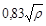
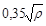

ВЕДОМСТВЕННЫЕ СТРОИТЕЛЬНЫЕ НОРМЫ
ПРАВИЛА
ПРОИЗВОДСТВА РАБОТ ПО УСТРОЙСТВУ
АВТОМАТИКИ И ТЕЛЕМЕХАНИКИ
НА ЖЕЛЕЗНОДОРОЖНОМ ТРАНСПОРТЕ (СЦБ).
ВЫСОКОВОЛЬТНЫЕ ЛИНИИ
АВТОБЛОКИРОВКИ
ВСН 129-92
МОСКВА 1993
Разработаны Всесоюзным ордена Октябрьской революции научно-исследовательским институтом транспортного строительства (ЦНИИСом) - канд. техн. наук Э.Е. Асс, институтом Гипротранссигналсвязь - инженеры О.Н. Липинкин, Я.Ц. Грицко, Л.М. Мельникова, при участии треста «Трансэнергомонтаж» - инженеры М.П. Булгаков, Б.С. Никитин.
Внесены Всесоюзным ордена Октябрьской революции научно-исследовательским институтом транспортного строительства (ЦНИИСом).
Подготовлены к утверждению отделом научно-технического развития Государственной корпорации «Трансстрой».
С введением в действие «Правил производства работ по устройству автоматики и телемеханики на железнодорожном транспорте (СЦБ). Высоковольтные линии автоблокировки. ВСН 129-92» теряют силу «Правила производства работ по устройству автоматики и телемеханики на железнодорожном транспорте (СЦБ). Часть III. Высоковольтно-сигнальные и высоковольтные линии автоблокировки» ВСН 129-74.
Согласованы Министерством путей сообщения.
Настоящие Правила разработаны на основе ранее действующих ВСН 129-74 с учетом новых нормативных, нормативно-технических и организационно-методических документов по проектированию и строительству высоковольтных линий.
|
Ведомственные строительные нормы |
ВСН 129-92 |
|
|
Государственная корпорация «Трансстрой» |
||
|
Правила производства работ по устройству автоматики и телемеханики на железнодорожном транспорте (СЦБ). Высоковольтные линии автоблокировки |
Взамен ВСН 129-74 |
1.1. Правила по строительству воздушных высоковольтных линий автоблокировки разработаны в развитие СНиП III-38-75, ч. III «Железные дороги. Правила производства и приемки работ» и распространяются на все виды строительно-монтажных работ, выполняемых на железных дорогах общей сети МПС при сооружении воздушных линий основного и резервного питания автоблокировки с деревянными и железобетонными опорами, общими для одной или двух трехпроводных цепей переменного тока с изолированной нейтралью, напряжением 6 - 10 кВ без сигнальных или с сигнальными цепями низкого напряжения автоблокировки.
1.2. Строительные и монтажные работы при сооружении высоковольтной линии автоблокировки должны выполняться с соблюдением требований настоящих Правил, Строительных норм и правил (СНиП), Правил устройства электроустановок (ПУЭ), Правил технической эксплуатации электроустановок потребителей и правил техники безопасности при эксплуатации электроустановок потребителей, Правил технической эксплуатации железных дорог (ПТЭ), технических условий на типовые конструкции высоковольтно-сигнальных линий автоблокировки, типовых проектов «Высоковольтные линии автоблокировки напряжением 6 - 10 кВ» и «Опоры из железобетона для высоковольтных линий автоблокировки напряжением 6 - 10 кВ», инструкций, приказов и указаний МПС и Государственной корпорации «Трансстрой», касающихся строительства высоковольтных линий автоблокировки и вышедших после издания настоящих Правил.
|
Внесены Всесоюзным научно-исследовательским институтом транспортного строительства (ЦНИИСом) |
Утверждены Государственной корпорацией «Трансстрой» |
Срок введения в действие |
1.3. При производстве работ должны быть обеспечены безопасные условия труда, а также условия пожаровзрывобезопасности и охраны окружающей среды в соответствии с требованиями «Правил по охране труда при строительстве и монтаже воздушных линий электропередачи напряжением 0,4 - 10 кВ, трансформаторных подстанций 6 - 35 кВ и устройств наружного освещения» и положениями нормативных материалов, приведенных в «Перечне нормативных документов по охране труда, государственных и отраслевых стандартов системы безопасности труда, действующих в организациях и на предприятиях Министерства транспортного строительства СССР».
(Измененная редакция).
1.4. Применяемые при сооружении высоковольтных линий автоблокировки материалы, изделия и конструкции должны удовлетворять требованиям соответствующих строительных норм и правил, ГОСТ, технических условий и технической документации предприятий-поставщиков и соответствовать проектной документации и иметь сертификаты по безопасности и экологии.
1.5. Изменение настоящих Правил допускается только по согласованию с Государственной корпорацией «Трансстрой» и МПС.
1.6. Изменение проектной документации для сооружения высоковольтной линии автоблокировки на конкретном участке должно производиться при условии согласования заказчиком, проектной организацией и подрядчиком.
1.7. Линии, предназначенные для основного питания устройств СЦБ - воздушные, как правило, напряжением 10 кВ (при соответствующем обосновании 35 кВ), трехфазные (кроме системы ПР - провод - рельс), с изолированной нейтралью, с двусторонним питанием от тяговых или трансформаторных подстанций, с подключением к шинам через изолирующие трансформаторы.
Применение кабельных вставок допускается только в исключительных случаях при соответствующем обосновании.
1.8. На участках железнодорожных линий с автономной тягой и автоблокировкой проектируются две одноцепные линии электроснабжения. Одна - для основного питания устройств СЦБ и связи, вторая - для резервного питания устройств СЦБ и связи, электроснабжения малых станций, линейно-путевых зданий и других железнодорожных потребителей.
1.9. На участках железных дорог с электрической тягой основное питание устройств СЦБ и связи осуществляется от одноцветной линии.
Резервное питание устройств СЦБ и связи, электроснабжение промежуточных станций, разъездов и линейных потребителей предусматривается, как правило, от линий продольного электроснабжения (ПЭ), подвешенных на опорах контактной сети.
Продольные линии сооружаются: при электрификации на переменном токе 25 кВ, как правило, по системе ДПР (два провода - рельс) или, при соответствующем обосновании, ПР (провод - рельс); при электрификации на постоянном токе - напряжением 10 кВ.
1.10. При наличии существующей линии ПЭ, которая может быть использована для резервного питания устройств СЦБ и связи, допускается сооружать одну одноцепную линию электроснабжения с доведением существующей линии продольного электроснабжения до действующих норм.
1.11. Двухцепные линии сооружаются при достаточном техническом и экономическом обосновании по согласованию с МПС.
Цепи двухцепных линий автоблокировки предназначаются:
одна цепь, именуемая цепью автоблокировки (цепь СЦБ), - для основного электропитания устройств СЦБ;
вторая цепь, именуемая цепью продольного электроснабжения железнодорожных потребителей (цепь ПЭ), - для резервного электропитания устройств СЦБ и связи, электроснабжения малых станций и др.
1.12. На примыканиях и тупиковых участках малодеятельных линий, оборудованных путевой автоблокировкой, допускается одностороннее (консольное) питание основной и резервной линии электроснабжения.
1.13. Линии продольного электроснабжения проектируются с учетом применения электрообогрева стрелочных переводов в случае его целесообразности для конкретного климатического района.
1.14. Высоковольтные линии автоблокировки сооружаются в соответствии с типовыми проектами в I - IV ветровых и I - IV гололедных районах.
Конструкции линии, предусмотренные типовыми проектами, рассчитаны на сочетание нагрузок от гололеда с толщиной стенки 20 мм и от ветра со скоростью 15 м/с.
1.15. Подвеска сигнальных проводов на опорах высоковольтной линии автоблокировки должна производиться в исключительных случаях по разрешениюМПС.
(Измененная редакция).
1.16. Ответвления от высоковольтных линий на предузловых развязках и обходах могут быть двухпроводными.
1.17. В исключительных случаях по согласованию с МПС допускается строительство высоковольтных линий автоблокировки с горизонтальным расположением проводов.
1.18. Кабели вставок в цепи основного и резервного питания устройств СЦБ воздушной высоковольтной линии должны прокладываться по отдельным, изолированным друг от друга трассам.
Расстояние между траншеями для этих кабелей должно быть не менее 3,0 м, а в стесненных условиях не менее 1 м.
1.19. На всех пунктах питания выводы линий СЦБ и ПЭ должны проектироваться раздельными для каждого плеча питания.
1.20. Сооружение высоковольтных линий автоблокировки должно производиться с максимальным использованием машин и механизмов и выполнением по возможности большого объема работ на приобъектной базе (стройплощадке).
2.1.1. Разработка проектно-сметной документации осуществляется в две стадии - проект (П) и рабочая документация (Р) или в одну стадию - рабочий проект (РП).
2.1.2. Стадийность разработки проектно-сметной документации определяется техническим заданием или инстанцией, утверждающей ТЭО (ТЭР).
2.1.3. Работы по сооружению ВЛ СЦБ могут быть начаты только после получения строительной организацией утвержденного заказчиком рабочего проекта (рабочей документации), каждый чертеж которого имеет штамп заказчика «к производству работ».
2.1.4. Проектно-сметная документация должна удовлетворять требованиям СНиП 1.02.01-85.
2.1.5. Внесение изменений в проектную документацию допускается только с разрешения инстанции, утвердившей ее, при согласовании с проектной организацией.
2.1.6. Проектная документация на стадии проект должна включать следующие материалы:
а) схему электроснабжения ВЛ СЦБ с указанием пунктов питания; марки и сечения в/в проводов; потери напряжения в линии в режиме рабочего и резервного питания; потребную мощность каждого плеча питания; потери напряжения в линии при аварийном режиме в случае выхода из строя одного из пунктов питания;
б) схему трассы ВЛ СЦБ, привязанную к ж.-д. путям, с указанием: сторонности; пикетажа; существующих линий связи; существующих ВЛ; границ леса и защитных насаждений; расстояний всех перечисленных коммуникаций от оси ВЛ СЦБ;
в) пояснительную записку с указанием: характеристики ВЛ СЦБ; перечня относимых и каблируемых линий связи и существующих ВЛ - 0,4 ÷ 10 кВ; ведомости рубки леса; ведомости мест с вечномерзлыми, болотистыми, затопляемыми и агрессивными по отношению к железобетону грунтами;
г) проект организации строительства;
д) сметную документацию, включающую сводный сметный расчет стоимости строительства; ведомость договорной цены; объектные и локальные сметные расчеты;
е) паспорт проекта.
2.1.7. В рабочую документацию должно входить:
а) схема электроснабжения ВЛ СЦБ с указанием всех строящихся по проекту и переоборудуемых существующих пунктов питания. На схеме показываются типы проектируемых пунктов питания и высоковольтных камер, марка, сечение и протяженность высоковольтных кабелей, секционирование высоковольтных линий. На схеме также показываются потребляемые мощности плеч питания и расчетные потери напряжения в линии в нормальном и аварийном режимах питания;
б) план трассы ВЛ СЦБ и питающих ВЛ, нанесенные на ситуационный план участка в масштабе 1:2000 или 1:1000 железнодорожного пути, согласованный со всеми заинтересованными организациями;
(Измененная редакция).
в) ведомость опор ВЛ СЦБ по перегонам и станциям с указанием типов устанавливаемых опор;
г) однолинейная схема ВЛ СЦБ с указанием мест установки (по пикетам) силовых, кабельных, транспозиционных опор и опор с разъединителями, а также релейных и силовых шкафов, КТП и нагрузочных данных силовых трансформаторов;
д) ведомость заземлений опор ВЛ СЦБ с указанием характеристики и удельного сопротивления грунта и типа заземления (группового, лучевого, протяженного и т.п.);
е) чертежи нетиповых опор, сложных нетиповых пересечений и переходов ВЛ СЦБ по мостам, пересеченной местности через реки, овраги и т.д. и другие искусственные и естественные препятствия;
ж) ведомость вырубки просек;
з) ведомость отвода земли для установки опор в местах выхода за полосу отвода ж. д.;
и) ведомости объемов основных строительных, монтажных и специальных строительных работ, определенных проектно-сметной документацией (ВР);
к) ведомости потребности в материалах и оборудовании, составленные по видам строительных и монтажных работ, с распределением по календарным периодам строительства (ВМ);
л) объектные и локальные сметы;
м) спецификации оборудования и материалов (СО).
В состав рабочего проекта, кроме перечисленного, должны входить пояснительная записка, решения по организации выполнения строительно-монтажных работ или раздел «Организация строительства», паспорт проекта.
До строительства воздушной линии «Заказчик» должен передать подрядной строительной организации документацию с отметкой «к производству строительно-монтажных работ».
2.2.1. Не позднее семи месяцев до намеченного начала строительства заказчик (генеральный подрядчик) должен передать подрядной (субподрядной) организации - строительно-монтажному поезду рабочую проектно-сметную документацию на весь объем работ по объекту (пусковому комплексу) в количестве экземпляров, установленном СНиП 1.02.01-85.
2.2.2. На основании изучения проектно-сметной документации трест определяет потребность необходимых материалов, изделий, машин и механизмов, планирует изготовление нестандартных изделий, контролирует своевременность и правильность заключения строительно-монтажными поездами договоров подряда (субподряда), рассматривает и согласовывает сметную стоимость и принятые в проекте технические решения, утверждает их к производству работ, рекомендует, исходя из конкретных условий, прогрессивные методы выполнения строительно-монтажных работ, согласовывает с заказчиком и проектной организацией необходимые изменения в проекте.
2.2.3. Подразделение треста - строительно-монтажный поезд должен провести следующие мероприятия: изучение трассы и условий производства работ в натуре; составление и заключение генподрядного (субподрядного) договора с заказчиком (генподрядчиком); разработку проекта производства работ (ППР).
2.3.1. Решения по организации выполнения строительно-монтажных работ или раздел «Организация строительства» должны включать:
характеристику условий строительства, содержащую сведения о климатических условиях (климатический район, температурная зона, температура абсолютная минимальная, расчетный зимний период, ветровая нормативная нагрузка, глубина и время промерзания грунта, начало образования и схода снежного покрова), сведения об особых условиях с их привязкой к месту выполнения работ (категория грунтов, болота и затопляемые места, наличие дорог, стесненные условия по причине сильной заболоченности, горной местности, прижимных участков, система электрификации железной дороги и др.);
состав работ, сопутствующих строительству (реконструкция источников питания и линий электропередач Минэнерго, линий связи и радиовещания Министерства связи и других министерств, снос строений для подготовки территории строительства и др.);
положения по организации строительства (определение дислокации прорабских пунктов в увязке с календарным планом производства работ, размещение разгрузочных и монтажных площадок и складов, мобильного инвентарного жилья, способов доставки рабочих от места дислокации прорабского пункта к месту производства работ на участке, оптимальный период выполнения работ по строительству линии, обоснование методов производства строительно-монтажных работ);
данные по трудоемкости строительства;
мероприятия по охране труда;
условия сохранения окружающей природной среды;
мероприятия по пожаробезопасности;
календарный план строительства с распределением капитальных вложений и объемов строительно-монтажных работ по периодам строительства - месяцам, кварталам, годам с учетом работ подготовительного и основного периодов (работы подготовительного периода - вырубка просек, доставка основных материалов на трассу; работы основного периода - разработка котлованов, сборка и установка опор, монтаж проводов, установка и монтаж оборудования, устройство переходов, устройство заземлений);
(Измененная редакция).
ведомость объемов основных строительно-монтажных работ с приведением данных для каждого плеча питания;
ведомость потребности в строительных конструкциях, изделиях, материалах и оборудовании;
график потребности в основных строительных машинах, механизмах и транспортных средствах;
перечень временных зданий и сооружений;
ведомость потребности в местных строительных материалах и источниках их покрытия;
перечень временных сооружений по маршруту доставки материалов, конструкций и оборудования с указанием переездов через водные преграды, объездов, сооружения лежневых участков дорог и др.;
указания по сооружению отдельных участков линии только в зимнее время;
транспортную схему доставки материально-технических ресурсов с указанием станций разгрузки и промежуточных складов.
2.3.2. Решения по организации строительства утвержденного рабочего проекта обязательны для выполнения всеми организациями, участвующими в строительстве. Отступления от решений допускаются только по согласованию с организациями, разработавшими и утвердившими проектную документацию.
2.3.3. При строительстве высоковольтной линии автоблокировки по пусковым комплексам решения по организации строительства должны разрабатываться для всего участка в целом.
2.4.1. Проект производства работ (ППР) должен составляться на основе изучения проектно-сметной документации (в том числе решений по организации выполнения строительно-монтажных работ или раздела «Организация строительства»), договора подряда (субподряда) и его положений, а также ознакомления с трассой строительства линии в натуре на местности.
2.4.2. В состав ППР включаются:
а) техническая характеристика высоковольтной линии автоблокировки (напряжение, количество высоковольтных и сигнальных проводов, протяженность линии, тип стоек, тип линии, марки высоковольтных и сигнальных проводов, длина кабельных вставок и марка кабеля, сведения о питающих линиях и пунктах питания и т.п.);
б) ведомость физических объемов основных работ;
в) характеристика местности и грунтов по трассе линии;
г) ведомость переходов, подлежащих переустройству до начала сооружения линии;
д) ведомость особо опасных мест: пересечения и сближения строящейся линии с искусственными сооружениями и естественными преградами;
е) ведомость установки линейных разъединителей, КТП и трансформаторов ОМ;
ж) сведения о методах установки опор и монтажа проводов;
з) глубина закопки опор;
и) расчет необходимого количества основных машин и механизмов;
к) принятые способы производства работ;
л) сведения о местах дислокации и составе бригад с разбивкой по звеньям;
м) перечень средств малой механизации, инструмента и технологического инвентаря для бригады по сооружению высоковольтной линии автоблокировки;
н) календарные графики производства работ, поставки материалов и оборудования, работы машин и механизмов, движения рабочей силы;
о) характеристика местности и грунтов по трассе линии;
п) схема транспортировки стоек, опор, конструкций, материалов и оборудования по трассе линии;
р) решения по технике безопасности;
с) перечень документации, необходимой при сдаче линии в эксплуатацию;
т) пояснительная записка, содержащая: обоснование решений по производству работ, в том числе выполняемых в зимнее время; потребность в энергетических ресурсах и решения по ее покрытию; перечень мобильных (инвентарных) зданий, сооружений и устройств с расчетом потребности и обоснованием условий привязки их к объекту строительства; мероприятия, направленные на обеспечение сохранности и исключение хищения материалов, изделий, конструкций и оборудования на объекте строительства; природоохранные мероприятия; технико-экономические показатели, включая объемы и продолжительность выполнения строительно-монтажных работ, а также их себестоимость в сопоставлении со сметной, уровень механизации и затраты труда на единицу физических объемов работ (например, на строительство 1 км высоковольтной линии автоблокировки).
2.4.3. ППР разрабатывается работниками производственно-технического отдела (отдела инженерной подготовки производства) совместно с производителем работ (строймастером) и утверждается главным инженером (начальником), строительно-монтажной организации. ППР для линии протяженностью более 50 км направляется на рассмотрение и согласование в вышестоящую организацию (трест).
2.5.1. До начала строительства высоковольтной линии на объекте должны быть осуществлены следующие мероприятия по подготовке строительства: построены разгрузочные площадки, монтажные площадки, а также площадки и склады для приема и хранения изделий, конструкций, материалов и оборудования (стоек, столбов, траверс и т.п.); к прорабским и мастерским участкам подведены электроэнергия, связь, водоснабжение, теплоснабжение (по возможности), а также построены автомобильные подъездные дороги и железнодорожные тупики (при необходимости); оборудованы площадки для стоянки и ремонта машин и механизмов.
2.5.2. Монтажные площадки предназначаются для предварительной заготовки и оснастки деревянных опор, насадки изоляторов на штыри траверс, сборки металлических конструкций, комплектовки деталей и материалов для отправки на трассу и др.
Местность, выбранная для площадок хранения материалов и монтажных площадок, должна быть ровной, сухой, незатапливаемой. Площадки следует оборудовать водоотводными устройствами, навесами и настилами для размещения барабанов с проводом, бухт проволоки и ящиков (или штабелей) с металлическими изделиями. Должны быть сооружены также настилы для проезда транспорта через водостоки.
Размеры площадок должны обеспечивать хранение максимального количества грузов, направляемых в данный пункт, сборку опор, подлежащих установке в соответствии с графиком производства работ и комплектовку для вывоза на трассу необходимого количества деталей и материалов.
2.5.3. До начала развозки опор, материалов и оборудования должны быть выполнены следующие работы: разбивка трассы, снос или переустройство постоянных и временных сооружений по трассе линии, вырубка просеки, обследование существующих дорог и мостов и при необходимости выполнение их ремонта.
Все пни по просеке должны быть выкорчеваны. Организация, осуществляющая вырубку, должна удалить за пределы трассы для дальнейшего использования или уничтожения (по согласованию с лесовладельцами) сваленные деревья, выкорчеванные или срезанные кустарники и порубочные остатки.
(Измененная редакция).
2.5.4. Разбивка трассы должна производиться заказчиком совместно с представителями проектной и строительно-монтажной организации в соответствии с проектной документацией.
Заказчик совместно с проектной организацией обеспечивает согласование трассы со всеми владельцами коммуникаций, находящихся в зоне прохождения линии, а также вызов на место разбивки трассы представителей владельцев коммуникаций. На объектах субподряда вопросы вызова представителей владельцев коммуникаций и разбивки трассы решает с заказчиком и проектной организацией генеральный подрядчик.
2.5.5. Не менее чем за 15 дней до начала производства работ по рытью (бурению) котлованов для опор, а также выполнения других сопутствующих работ заказчик (генподрядчик) должен оформить и передать подрядной (субподрядной) строительно-монтажной организации разрешение (ордер) на производство строительно-монтажных работ.
2.5.6. В пределах железнодорожной станции и полосы отвода железной дороги разрешение (ордер) на производство строительно-монтажных работ выдается отделением дороги или по его указанию - дистанцией пути и начальником соответствующей станции.
3.1. Погрузочно-разгрузочные работы должны выполняться, как правило, механизированным способом с соблюдением требований главы 7 СНиП III-4-80*. ГОСТ 12.3.009-76*, «Правил устройства и безопасной эксплуатации грузоподъемных кранов», «Правил техники безопасности и производственной санитарии при производстве погрузочно-разгрузочных работ на железнодорожном транспорте МПС», «Правил техники безопасности при погрузочно-разгрузочных работах и перевозке различных грузов на автотранспорте», правил безопасного выполнения работ и транспортирования грузов в охранной зоне воздушной линии электропередачи и требований проектов производства работ, технологических карт и инструкций, разработанных с учетом местных условий.
Эксплуатация транспортных средств должна осуществляться в соответствии с «Правилами дорожного движения».
3.2. Поднимать и перемещать грузы вручную следует в соответствии с действующими предельными нормами переноски грузов.
3.3. Железобетонные стойки и приставки, деревянные столбы, конструкции, оборудование и др. должны выгружаться на прирельсовых строительных площадках кранами: на железнодорожном, колесном или гусеничном ходу.
В исключительных случаях допускается выгрузка деревянных столбов с железнодорожных платформ или автотранспорта с открывающимися бортами вручную с соблюдением мер безопасности.
3.4. К строительной площадке должен быть обеспечен подъезд транспортных средств, которые будут развозить стойки, опоры и др. по трассе строительства линии.
3.5. Погрузочно-разгрузочные работы должны производиться с применением специальных стропов или грузозахватных приспособлений.
3.6. Железобетонные стойки и приставки должны храниться рассортированными по типам, столбы - по длине.
3.7. Изоляторы, верхушечные штыри, крепежные изделия должны храниться в закрытых ящиках или контейнерах на открытом воздухе или в штабелях на деревянном настиле или подкладках, рассортированными по типам.
Барабаны с проводом и тросом должны располагаться вертикально, а бухты - горизонтально.
3.8. Стойки следует складировать штабелями. В каждом штабеле должно быть не более пяти рядов. Каждый ряд должен быть уложен на деревянные подкладки шириной 150 мм и высотой не менее 10 см, расположенные на расстоянии не более 1,5 м от концов стоек. Прокладки необходимо размещать одну над другой.
3.9. Деревянные столбы следует укладывать в штабели высотой не более 1,5 м. Нижний ряд должен располагаться на лежнях так, чтобы расстояние до земли было не менее 30 см. Последующие ряды следует укладывать на подкладки высотой не менее 5 см. Ширина штабеля не должна быть меньше его высоты.
Столбы в ряд необходимо укладывать так, чтобы их комли находились с одной стороны.
Штабеля стоек или столбов следует закреплять вертикальными стойками с подкосами.
3.10. Железобетонные приставки должны укладываться в штабель высотой не более 2,5 м и шириной не менее 4 м. Нижний ряд следует укладывать на подкладки. Между рядами необходимо устанавливать прокладки.
3.11. Деревянные траверсы и брусья должны храниться уложенными в клетки на подкладках из окоренной здоровой древесины. Высота клеток должна быть не более 2 м.
Клетки следует располагать на сухих возвышенных местах, очищенных от травы, щепы и мусора, а зимой от снега.
3.12. Для обеспечения проезда кранов, автомашин и тракторов расстояние между штабелями должно быть не менее 5 м.
3.13. Оборудование наружной установки, не требующее защиты от атмосферных осадков, может храниться на открытых площадках с обязательным применением настилов или подкладок, предотвращающих соприкосновение оборудования с землей.
Оборудование внутренней установки должно храниться в закрытом помещении на дощатом полу, настиле или подкладках.
3.14. Кузов транспортного средства перед погрузкой и место складирования стоек, конструкций и материалов до выгрузки должны быть очищены от посторонних предметов.
3.15. При погрузке или разгрузке автокран или кран на гусеничном ходу должен размещаться на ровной площадке. Расстояние между поворотной частью крана при любом положении и штабелями грузов, другими транспортными средствами и строениями должно быть не менее 1 м. Опасная зона (круг радиусом, равным кратчайшему расстоянию от оси вращения крана до вертикальной линии, проходящей через наиболее удаленную точку транспортируемого груза, плюс 7 м) должна быть ограничена веревочным ограждением или стойками с предупредительными плакатами.
3.16. При погрузке или выгрузке груз (стойка, опора и пр.) сначала приподнимается на 0,2 - 0,3 м, а затем на 0,5 м выше встречающихся на пути груза предметов, после чего перемещается на транспортное средство или к месту складирования.
3.17. При погрузке или выгрузке электролинейщик может подходить непосредственно к стойке при вертикальном расстоянии от стойки или опоры до места укладки не более 1 м. При этом должна быть обеспечена возможность быстрого выхода из опасной зоны при угрозе падения стойки.
3.18. При выполнении погрузочно-разгрузочных и установочных работ не допускается: строповка стоек, опор, конструкций и другого груза в неустойчивом положении; поправка строповочных приспособлений на приподнятом грузе и на крюке подъемного механизма ударами молота или с помощью лома; выравнивание поднимаемого груза вручную.
3.19. Погрузка стоек, конструкций, оборудования и материалов на железнодорожный подвижной состав должна производиться с соблюдением установленных габаритов. Грузы, перевозимые на автомобилях, прицепах и других транспортных средствах, по высоте не должны превышать габаритную высоту проезда под мостами и в тоннелях.
С целью исключения самопроизвольного смещения груза во время транспортирования он должен быть надежно закреплен.
3.20. При погрузке и выгрузке железобетонных стоек, деревянных столбов и опор их следует строповать двухветвевым стропом так, чтобы угол между ветвями стропа не превышал 90°. Груз должен дополнительно удерживаться и направляться рабочим при помощи веревки или троса.
3.21. Запрещается производить погрузку и выгрузку деревянных столбов, пропитанных масляными антисептиками, без специальной одежды, установленной действующими нормами. Перемещение столбов, пропитанных масляными антисептиками, должно производиться с помощью специальных приспособлений.
3.22. Грузы разрешается брать только с верха штабеля. При этом необходимо убедиться в том, что лежащий груз занимает устойчивое положение и не может обрушиться.
3.23. При разгрузке или погрузке грузов кранами на железнодорожном ходу или кранами дрезин и приближении поезда по соседнему пути поднятый груз должен быть опущен, а стрела крана закреплена с обеспечением габарита приближения строений.
(Измененная редакция).
3.24. Железобетонные стойки, оснащенные деревянные промежуточные опоры и заготовки для сложных деревянных опор, траверсы, брусья, конструкции и изделия для оснастки и сборки опор и др. должны транспортироваться к месту установки на саморазгружающихся опоровозах, автомобилях с полуприцепами или тракторах на колесном или гусеничном ходу с прицепами, на специальных санях или волокушах.
3.25. Если проезд по трассе затруднен, невозможен или экономически нецелесообразен (большие объезды, необходимость перегрузки и др.), железобетонные стойки, деревянные опоры и заготовки, конструкции и изделия для оснастки и сборки опор следует вывозить в «окно» поездом, состоящим из локомотива, двух четырехосных платформ или полувагонов и расположенного между ними крана на железнодорожном ходу. Если платформы оборудованы крановыми установками, то отдельного крана не требуется. Разгрузка должна осуществляться в местах, удобных для подъезда транспортных средств.
3.26. При транспортировке (развозке по трассе, в том числе в железнодорожных полувагонах и на платформах) железобетонные стойки должны располагаться так, чтобы с одной стороны укладки вершины стоек одного ряда чередовались с комлями стоек смежного ряда.
Деревянные опоры должны быть уложены комлями вперед (по ходу движения).
Нижний ряд стоек должен укладываться на две деревянные подкладки шириной 150 мм, высотой не менее 100 мм и длиной, равной ширине транспортного средства.
В подкладках должны быть гнезда для стоек, либо прибиваться клинья, предотвращающие перекатывание стоек. Подкладка должна быть надежно прикреплена к полу транспортного средства. Между рядами стоек следует укладывать прокладки шириной 150 мм и высотой не менее 100 мм с гнездами или клиньями.
Расстояние от подкладок или прокладок до концов опор должно быть не более 1,5 м.
3.27. При перевозке на железнодорожных платформах железобетонных стоек, погруженных более чем в один ряд, необходимо оборудовать платформу деревянными стойками, устанавливаемыми в стоечных гнездах и закрепляемых клиньями.
3.28. До развозки опор по перегону в полувагоне или на платформе следует снять верхние вязки и элементы крепления, предотвращающие продольное перемещение опор.
Средние проволочные вязки между стойками платформы допускается снимать только после того, как будут разгружены железобетонные стойки, находившиеся выше этих вязок.
3.29. При развозке по трассе строительства линии стоек, конструкций и других грузов запрещается производить выгрузку их на ходу железнодорожного подвижного состава, автомобилей и других транспортных средств.
3.30. Запрещается сбрасывать при разгрузке, а также подтаскивать железобетонные стойки и приставки волоком от места разгрузки к месту установки.
3.31. При транспортировании барабаны с проводом или тросом должны быть установлены в вертикальное положение и надежно закреплены расчалками и клиновыми подкладками (упорами), длина которых должна на 30 см превышать длину перевозимого барабана.
3.32. У барабанов, подготовленных к погрузке или разгрузке, должны быть исправные щеки и втулки, выступающие гвозди загнуты или удалены.
3.33. Работы по погрузке и разгрузке барабанов с проводом или тросом должны производиться, как правило, механизированным способом.
При отсутствии грузоподъемных машин и механизмов допускается применять специально сооруженные аппарели, передвижные деревянные платформы либо покати.
3.34. Погрузка и разгрузка барабанов с проводами или тросом с применением покатей или передвижной деревянной платформы должна производиться с помощью лебедок, полиспастов или талей.
Разгрузка барабанов свободным скатыванием или сбрасыванием запрещается.
3.35. На трассе стойки или деревянные опоры должны разгружаться так, чтобы комель находился у колышка, обозначающего место установки опоры, на расстоянии, обеспечивающем бурение или копку котлована.
3.36. Если оснастка опор производится на месте установки, траверсы, брусья, крепежные изделия и другие детали следует разгружать в одном месте, в непосредственной близости от подлежащей оснастке стойки или столба.
(Измененная редакция).
3.37. До погрузки изоляторы должны быть очищены, тщательно осмотрены и испытаны в соответствии с требованиями п. 1.8.32 Правил устройства электроустановок (М.: Энергоатомиздат, 1985).
Изоляторы, имеющие трещины и сколы, размеры которых превышают указанные в технических условиях на данный тип изолятора, к применению не допускаются.
4.1. Разбивку трассы строительства линии выполняет заказчик или по согласованию с ним строительно-монтажная и проектная организация на основании плана трассы и однолинейной (трехлинейной) схемы.
4.2. Трасса воздушной линии в населенной, ненаселенной и труднодоступной местности должна располагаться в соответствии с проектом как можно ближе к земляному полотну железной дороги.
Населенной местностью считаются территории раздельных пунктов, земли городов в пределах городской черты в границах их перспективного развития на 10 лет, пригородные и зеленые зоны, курорты, земли поселков городского типа в пределах поселковой черты и сельских населенных пунктов в пределах черты этих пунктов. Ненаселенная местность - это перегоны между раздельными пунктами железных дорог (за исключением местности, отнесенной к населенной и труднодоступной), незастроенные местности, хотя бы и часто посещаемые людьми, доступные для транспорта и сельскохозяйственных машин, сельскохозяйственные угодья, огороды, сады, местности с отдельными редко стоящими строениями и временными сооружениями.
(Измененная редакция).
Труднодоступной местностью называется местность, недоступная для транспорта и сельскохозяйственных машин.
При разбивке трассы необходимо учитывать нормы наименьших расстояний при пересечении и сближении воздушной линии с искусственными сооружениями и естественными препятствиями (табл. 4.1) и минимальные расстояния от проводов до поверхности земли в нормальном режиме (табл. 4.2).
4.3. Замена воздушных линий кабельными допускается только по разрешению МПС в густо населенных районах и в районах с интенсивным движением и сильно развитыми воздушными сетями, а также при переходе через железнодорожные пути, реки и другие искусственные сооружения и естественные препятствия в случае, если подлежащая строительству воздушная линия не будет удовлетворять существующим нормам пересечения и сближения с искусственными сооружениями и естественными преградами.
Таблица 4.1
|
Наименование участков и сооружений |
Наименьшее расстояние, м |
||
|
1 |
Для неэлектрифицированных железных дорог от нижнего провода до головки рельса при пересечении железных дорог широкой колеи общего и необщего пользования и узкой колеи общего пользования железных дорог узкой колеи необщего пользования |
7,5 - для неэлектрифицированных железных дорог общего пользования. |
|
|
6,0 - для железных дорог узкой колеи необщего пользования |
|||
|
2 |
Для электрифицированных железных дорог от нижнего провода до наивысшего провода или несущего троса контактной сети при пересечении: |
||
|
при электротяге постоянного тока |
2,0 |
||
|
при электротяге переменного тока |
3,0 |
||
|
3 |
При пересечении или сближении от основания опоры до головки ближайшего рельса неэлектрифицированных железных дорог, по горизонтали |
Высота опоры плюс 3 м |
|
|
4 |
То же, в условиях стесненной трассы |
В габарите опор контактной сети от крайнего провода |
|
|
5 |
При пересечении или сближении от основания опоры до оси опоры контактной сети на электрифицированных железных дорогах, по горизонтали |
Высота опоры плюс 3 м |
|
|
6 |
То же, в условиях стесненной трассы при отсутствии проводов с полевой стороны опор контактной сети |
3,0 |
|
|
7 |
При сближении с электрифицированными железными дорогами в условиях стесненной трассы от крайнего провода ВЛ автоблокировки напряжением 10 кВ до крайнего провода ВЛ напряжением 6 - 10 кВ, подвешенной на опорах контактной сети с полевой стороны (по горизонтали) |
2,0 |
|
|
8 |
То же, до провода системы ДПР, напряжением 27,5 кВ, при отсутствии сигнальных проводов (по горизонтали) |
3,0 |
|
Автодороги всех категорий |
|||
|
1 |
От нижнего провода до полотна дороги при пересечении (по вертикали): |
||
|
для линий с одними проводами напряжением 6 - 10 кВ |
7,0 |
||
|
для линий с сигнальными проводами |
5,5 |
||
|
2 |
При пересечении от основания опоры до бровки земляного полотна по горизонтали |
Высота опоры |
|
|
3 |
То же, на участках стесненной трассы от любой части опоры до подошвы насыпи дороги или до наружной бровки кювета (по горизонтали): |
||
|
при пересечении дорог категорий I и II |
5,0 |
||
|
при пересечении дорог остальных категорий |
1,5 |
||
|
4 |
При параллельном следовании от опоры до бровки полотна дороги по горизонтали |
Высота опоры плюс 5 м |
|
|
5 |
То же, в условиях стесненной трассы от крайнего провода при неотклоненном положении до бровки земляного полотна |
2,0 |
|
|
Троллейбусные и трамвайные линии |
|||
|
1 |
При пересечении с троллейбусной линией от нижнего провода: |
||
|
до высшей отметки проезжей части |
11,0 |
||
|
до проводов или несущих тросов контактной сети |
3,0 |
||
|
2 |
При пересечении с трамвайной линией от нижнего провода: |
||
|
до головки рельса |
9,5 |
||
|
до проводов или тросов контактной сети |
3,0 |
||
|
3 |
При приближении от отклоненных проводов до опор троллейбусной и трамвайной контактных сетей по горизонтали |
3,0 |
|
|
Воздушные линии электропередачи |
|||
|
1 |
Расстояние по вертикали между проводами ВЛ автоблокировки напряжением 6 - 10 кВ и проводами другой ВЛ при их пересечении и при напряжении последней: |
||
|
до 10 кВ вкл. |
2,0 ÷ 2,5 |
||
|
от 20 до 110 кВ вкл. |
3,0 ÷ 5,0 |
||
|
от 150 до 200 кВ вкл. |
4,0 ÷ 7,0 |
||
|
от 330 до 500 кВ вкл. |
5,0 ÷ 8,0 |
||
|
2 |
Расстояние по вертикали между сигнальными проводами и проводами воздушных линий, напряжением до 1 кВ при их пересечении |
1,25 |
|
|
3 |
При параллельном следовании ВЛ автоблокировки с другими ВЛ расстояние по горизонтали между осями линий: |
||
|
для воздушных линий напряжением 500 кВ |
Высота наиболее высокой опоры, но не менее 50 м |
||
|
для остальных воздушных линяй напряжением 6 ÷ 330 кВ |
Высота наиболее высокой опоры |
||
|
4 |
То же, в условиях стесненной трассы расстояния между крайними проводами линий при неотклоненном положении последних: |
||
|
для воздушных линий, напряжением до 20 кВ вкл. |
2,5 |
||
|
для воздушных линий 35 кВ |
4,0 |
||
|
для воздушных линий 110 кВ |
5,0 |
||
|
для воздушных линий 150 кВ |
6,0 |
||
|
для воздушных линий 220 кВ |
7,0 |
||
|
для воздушных линий 330 кВ |
10,0 |
||
|
для воздушных линий 500 кВ |
15,0 |
||
|
5 |
При пересечении ВЛ автоблокировки с другими воздушными линиями расстояние по горизонтали от опоры верхней пересекающей ВЛ до проводов нижней пересекаемой ВЛ автоблокировки при их наибольшем отклонении |
6,0 |
|
|
6 |
То же, от опор нижней пересекаемой ВЛ автоблокировки до проводов верхней пересекающей ВЛ |
5,0 |
|
|
7 |
То же, для опор анкерного типа напряжением 500 кВ |
10,0 |
|
|
8 |
Расстояние по горизонтали от опоры каблированного пролёта ВЛ автоблокировки до ближайшего провода ВЛ иного назначения |
10,0 |
|
Линии связи |
|||
|
1 |
Расстояние по вертикали между нижним проводом ВЛ автоблокировки напряжением 6 - 10 кВ и верхним проводом линии связи при их пересечении: |
||
|
для ВЛ автоблокировки без сигнальных проводов на деревянных опорах, при наличии грозозащитных устройств и для линий на железобетонных и металлических опорах |
2,0 |
||
|
то же, при отсутствии грозозащитных устройств |
4,0 |
||
|
для линии с сигнальными проводами (без цепей 220 В) |
0.6 |
||
|
для линии с сигнальными проводами при наличии цепей 220 В |
1,25 |
||
|
2 |
Расстояние по горизонтали от опор ВЛ автоблокировки до проводов линии связи при пересечении |
7,0 |
|
|
3 |
То же, от опор линии связи до проводов ВЛ автоблокировки напряжением 6 - 10 кВ при пересечении |
15,0 |
|
|
4 |
Расстояние по горизонтали между крайними проводами ВЛ автоблокировки напряжением 6 - 10 кВ и линии связи при параллельном пробеге |
По расчету влияния, но не менее высоты наиболее высокой опоры линии автоблокировки |
|
|
5 |
То же, на участках стесненной трассы, при наибольшем отклонении проводов ветром |
2,0 |
|
|
6 |
При пересечении кабелем напряжением 6 - 10 кВ линии связи с неизолированными проводами: |
||
|
от кабеля до незаземленной опоры ЛС |
2,0 |
||
|
от кабеля до заземленной опоры ЛС |
10,0 |
||
|
7 |
Расстояние по горизонтали при пересечении ВЛ автоблокировки подземных кабельных линий связи от основания кабельной опоры линии связи до проекция ближайшего провода ВЛ автоблокировки на горизонтальную плоскость, без учета отклонения проводов ветром |
15,0 |
|
|
8 |
Расстояние от кабелей связи до заземлителя ближайшей опоры ВЛ автоблокировки, а при отсутствии заземлителя до ближайшей части опоры при пересечении и при сближении, при удельном сопротивлении грунта (ρ): |
||
|
до 100 Ом·м |
 |
||
|
более 100 до 500 Ом·м |
10,0 |
||
|
более 500 до 1000 Ом·м |
11,0 |
||
|
более 1000 Ом·м |
 |
||
|
9 |
Расстояние от ближайшей части опор ВЛ автоблокировки при сближении с кабелями связи, имеющими повышенную защищенность от магнитных влияний марок МКПА, МКБА, ТЗПАу |
3,0 |
|
Водные пространства |
|||
|
1 |
Расстояние по вертикали от нижних проводов ВЛ автоблокировки до уровня самых высоких вод судоходных рек, каналов и т.п. при высшей температуре |
6,0 |
|
|
2 |
Расстояние по вертикали от нижних проводов ВЛ автоблокировки до судов или сплава при наивысшем горизонте воды и высшей температуре |
2,0 |
|
|
3 |
Расстояние по вертикали от нижнего провода ВЛ автоблокировки до уровня самых высоких вод несудоходных рек, каналов и т.д. при температуре + 15°: |
||
|
для ВЛ автоблокировки без сигнальных проводов |
3,0 |
||
|
для ВЛ автоблокировки с сигнальными проводами |
2,0 |
||
|
4 |
Расстояние по вертикали от нижнего провода ВЛ автоблокировки до уровня льда несудоходных рек, каналов и т.п. при температуре минус 5 °С при наличии гололеда |
6,0 |
|
Трубопроводы и канатные дороги |
|||
|
1 |
Расстояние по вертикали до любой части трубопровода или канатной дорога от проводов ВЛ автоблокировки в нормальном режиме |
3,0 |
|
|
2 |
Расстояние по горизонтали при параллельном следовании в нормальном режиме от крайнего провода ВЛ автоблокировки до: |
||
|
любой части магистрального газопровода |
Не менее удвоенной высоты опоры - для любой части магистрального газопровода; |
||
|
любой части магистрального нефтепровода и нефтепродуктопровода |
|||
|
50, но не менее высоты опоры - для любой части магистрального нефтепровода и нефтепродуктопровода |
|||
|
любой части пульпопровода |
Не менее 30 |
||
|
любой части трубопроводов другого назначения или канатной дороги |
Не менее высоты опоры |
||
|
3 |
Расстояние по горизонтали при параллельном следовании в стесненных условиях от крайнего провода ВЛ автоблокировки напряжением 6 - 10 кВ при его наибольшем отклонении до любой части трубопровода или канатной дороги |
3,0 |
|
|
4 |
При пересечении от опоры ВЛ автоблокировки до любой части трубопровода или канатной дороги: |
||
|
в нормальном режиме |
Не менее высоты опоры |
||
|
в стесненных условиях |
3,0 |
||
|
5 |
От ВЛ автоблокировки до продувочных свеч газопровода |
300 |
|
Водоохладители |
|||
|
1 |
Расстояние от крайних проводов ВЛ автоблокировки до брызгальных устройств и открытых градирен |
80 - 100 |
|
|
2 |
То же, до башенных градирен и одновентиляторных градирен |
30 - 40 |
|
|
3 |
То же, до секционных вентиляторных градирен |
40 - 60 |
|
|
Примечание. Низшие пределы расстояний относятся к градирням производительностью до 300 м3/ч и брызгальным бассейнам до 2000 м3/ч, при расположении охладителей с подветренной стороны |
|||
Мосты |
|||
|
1 |
Расстояние от проводов ВЛ автоблокировки напряжением 6 - 10 кВ до различных частей мостов: |
||
|
1.1. Мосты с ездой поверху: |
|||
|
до головки рельса или полотна пешеходной и проезжей части |
7,0 |
||
|
до конструкций |
2,0 |
||
|
1.2. Мосты с ездой понизу: |
|||
|
до настила пешеходной части |
6,0 |
||
|
до боковых конструкций мостов (при подвеске на кронштейнах) |
1,5 |
||
Плотины и дамбы |
|||
|
1 |
Расстояние от проводов ВЛ автоблокировки напряжением 6 - 10 кВ при наибольшем отклонении до отметки гребня и бровки откоса |
6,0 |
|
|
2 |
То же, до наклонной поверхности откоса |
5,0 |
|
|
3 |
То же, до поверхности, переливающейся через плотину воды: |
4,0 |
|
Нефтехранилища и склады твердого топлива |
|||
|
1 |
Расстояние от оси трассы ВЛ автоблокировки до нефтехранилищ и других зданий и сооружений, содержащих взрыво- и пожароопасные помещения |
По согласованию с органами пожарной охраны, но не менее 1,5 высоты опоры ВЛ автоблокировки |
|
|
Здания и сооружения |
|||
|
1 |
Расстояние по горизонтали от крайних проводов ВЛ автоблокировки напряжением 6 - 10 кВ при неотклоненном их положении до ближайших выступающих частей отдельных зданий и сооружений в ненаселенной местности |
10,0 |
|
|
2 |
Расстояние по горизонтали от крайних проводов ВЛ автоблокировки напряжением 6 - 10 кВ при наибольшем их отклонении до ближайших выступающих частей зданий и сооружений в населенной местности в стесненных условиях |
2,0 |
|
|
3 |
Расстояние по горизонтали от основания опоры ВЛ автоблокировки до кювета или бордюрного камня проезжей части улицы |
1,5 |
|
|
4 |
Расстояние от нижнего провода ВЛ автоблокировки напряжением 6 - 10 кВ при прохождении ее над несгораемыми зданиями и сооружениями промышленных предприятий, до крыши последних (см. пункт 4.8) |
3,0 |
|
|
Лесные массивы и зеленые насаждения |
|||
|
1 |
Ширина просеки от кроны деревьев в лесных массивах и лесных насаждениях должны приниматься: |
||
|
в низкорослых, насаждениях высотой до 4 м |
Не менее расстояния между крайними проводами плюс 6 м |
||
|
в насаждениях высотой более 4 м |
Не менее расстояния между крайними проводами плюс удвоенная высота основного лесного массива (по расстоянию, равному высоте лесного массива на каждую сторону от крайних проводов). При этом отдельные деревья или группы деревьев, растущие на краю просеки, для ВЛ автоблокировки должны вырубаться, если их высота больше высоты основного лесного массива |
||
|
2 |
Расстояние от крайних проводов ВЛ автоблокировки напряжением 6 - 10 кВ при их наибольшем отклонении до кроны деревьев в парках, заповедниках, лесах зеленых зон вокруг населенных пунктов, ценных лесных массивах, защитных полосах вдоль железных и шоссейных дорог, запретных полосах вдоль рек и озер |
По согласованию с организацией, ведающей насаждениями, но не менее 2 м |
(Измененная редакция).
Таблица 4.2
|
Наименьшее расстояние от поверхности земли до проводов, м |
||
|
высоковольтных |
сигнальных |
|
|
Населенная |
7,0 |
3,0 |
|
Ненаселенная |
6,0 |
2,5 |
|
Труднодоступная |
5,0 |
2,5 |
|
Пахотные земли сельскохозяйственных угодий |
6,0 |
4,0 |
|
Места, где возможен подъезд механизмов к железнодорожному пути |
6,0 |
4,0 |
4.4. Разбивку трассы выполнять так, чтобы количество угловых опор было минимальным. При этом необходимо избегать установки угловых и угловых-переходных опор в болотистых грунтах.
Место установки опор не должно совпадать с подземными коммуникациями, дорогами, ручьями, а также находиться в стороне от предполагаемых потоков дождевых вод, интенсивно размываемых русел рек и т.п.
(Измененная редакция).
4.5. Нормальные пролеты линий без сигнальных проводов могут быть удлинены с учетом несущей способности опор и обеспечения нормируемого габарита подвешиваемых проводов. При этом длина пролета не должна превышать более чем на 10 % расчетную.
4.6. Вылет угла линии не должен превышать 15 м (угол поворота линии должен быть не менее 145°).
Длины пролетов, смежных с угловой опорой, должны составлять половину нормального пролета у линий типа Н при углах с вылетом более 10 м и у линий типов У и ОУ при углах с вылетом более 7,5 м или быть равными длине нормального пролета у линии Н при углах с вылетом менее 10 м или у линий У и ОУ при углах с вылетом менее 7,5 м.
4.7. Трасса линии, подлежащей строительству в городах и населенных пунктах, как правило, не должна проходить вдоль трамвайных линий, а также не должна иметь частых пересечений с улицами и густыми и высокими зелеными насаждениями.
4.8. Выбор трассы должен производиться таким образом, чтобы провода воздушной линии не проходили над зданиями, складами огнеопасных или взрывчатых веществ, угля, торфа, штабелями дров и т.п.
В виде исключения провода воздушной линии могут подвешиваться над несгораемыми зданиями и сооружениями промышленных предприятий при условии заземления металлических крыш.
4.9. Трасса линии должна быть проложена так, чтобы опоры устанавливались в отдалении от интенсивно размываемых русел рек с учетом возможных перемещений этих русел и затопляемости района, стоков дождевых и талых вод, ледоходов и т.п.
При невозможности удаления трассы от таких мест необходимо предусматривать мероприятия по защите опор от повреждений - укрепление берегов, устройство каналов для отвода воды, ледорезов и др.
4.10. На прямолинейных участках трассы протяженностью более 3 км следует предусматривать через каждые 3 км установку противоветровой опоры, а в IV - VII ветровых районах - по две таких опоры на каждый километр линии.
При отсутствии на участках трассы протяженностью более 3 км анкерных опор следует предусматривать их установку через каждые 3 км.
4.11. При пересечении с искусственными сооружениями и естественными препятствиями применяются как сложные (А и АП-образные), так и одностоечные переходные опоры. Как правило, переходная опора не должна быть угловой. Совмещение переходной и угловой опор может выполняться, как исключение, в условиях стесненной трассы.
4.12. Воздушная линия должна пересекать электрифицированные или подлежащие электрификации железные дороги под углом, близким к 90°, но не менее 40°. Углы пересечения линии с другими инженерными сооружениями или естественными препятствиями не нормируются.
4.13. Опоры, ограничивающие пролет пересечения железных дорог общего пользования и всех электрифицированных путей, должны быть анкерного типа. При этом пересечение электрифицированных и подлежащих электрификации железных дорог с интенсивным движением поездов должно выполняться с применением металлических опор и установкой, в случае необходимости, в пролете пересечения между анкерными опорами промежуточных опор. Последние должны размещаться в междупутьях второстепенных путей или на обочине земляного полотна железных дорог любого назначения.
Пролеты пересечения железных дорог необщего пользования могут быть ограничены промежуточными опорами.
4.14. Опоры, ограничивающие пролеты пересечения автомобильных дорог первой категории, должны быть анкерного типа. При пересечении дорог других категорий они могут быть одностоечными с металлическими надставками или А-образными.
Показатели автодорог различных категорий приведены в табл. 4.3.
Таблица 4.3
|
Категории дорог |
|||||
|
I |
II |
III |
IV |
V |
|
|
Размеры элементов дороги |
|||||
|
Ширина проезжей части |
15 и более |
7,5 |
7,0 |
6,0 |
4,5 |
|
Ширина обочины |
3,75 |
3,75 |
2,5 |
2,0 |
1,75 |
|
Ширина разъединительной полосы |
5 |
- |
- |
- |
- |
|
Ширина земляного полотна |
27,5 и более |
15,0 |
12,0 |
10,0 |
8,0 |
(Измененная редакция).
4.15. Если при пересечении провода ВЛ автоблокировки располагаются над проводами воздушных линий электропередачи, опоры ВЛ автоблокировки, ограничивающие пролет пересечения, должны быть анкерными.
4.16. Пересечение ВЛ автоблокировки с воздушными линиями напряжением выше 10 кВ должно выполняться в анкерном пролете пересекаемой линии.
4.17. Опоры ВЛ автоблокировки, ограничивающие пролет пересечения с линиями связи и радиофикации с неизолированными проводами, должны быть анкерного типа.
4.18. При пересечении трассой ВЛ автоблокировки трамвайных и троллейбусных линий, надземных трубопроводов и канатных дорог, судоходных рек, каналов, шлюзов, затонов и озер, опоры, ограничивающие пролет пересечения, должны быть анкерного типа.
4.19. При пересечении трассой линии водных преград места для установки переходных опор должны находиться на отметке, расположенной выше горизонта наибольшего уровня высоких вод.
(Измененная редакция).
4.20. При разбивке одноцепных и двухцепных ВЛ с сигнальными проводами установку однофазных комплектных трансформаторных подстанций или линейных трансформаторов и разъединителей следует предусматривать на выносных опорах, устанавливаемых на расстоянии не менее 5 м от оси линии.
Установку силовых опор с линейными однофазными трансформаторами на одноцепных линиях без сигнальных проводов следует предусматривать в створе линии.
4.21. При разбивке трассы необходимо избегать крутых подъемов и спусков. Допустимый уклон не должен быть более значений (при тяге проводов соответственно вверх и вниз): 1/30 и 1/15 в случае нормальной вязки на одинарной траверсе; 1/10 и 2/10 при усиленной вязке на двойной траверсе; 3/10 и 3/10 при усиленной вязке на двойной траверсе со специальными накладками.
4.22. Если при разбивке линии длина последнего пролета превышает допустимую, необходимо произвести переразбивку с учетом изменения длины четырех-пяти пролетов за исключением ближнего к угловой опоре.
4.23. Все отступления от проектной документации, допущенные при разбивке трассы, должны быть согласованы с проектной организацией и заказчиком.
5.1. Разработка котлованов для установки опор должна производиться, как правило, механизированным способом с применением бурильно-крановых машин и одноковшовых экскаваторов на колесном или гусеничном ходу.
5.2. Разработка грунта вручную с использованием средств малой механизации допускается в случае, если применение машин и механизмов по местным условиям не представляется возможным или экономически нецелесообразно из-за небольшого объема работ.
5.3. В грунтах высокой прочности (скальных, мерзлых и др.) разработка котлованов может выполняться в соответствии с проектной документацией взрывным способом.
При этом в проектной документации должны быть приведены данные о методе, технологии и объеме буро-взрывных работ, согласованные на стадии разработки проекта со специализированной организацией по производству взрывных работ.
5.4. До начала производства земляных работ в населенной местности и вне полосы отвода железной дороги заказчик обязан оформить в исполкоме Совета народных депутатов разрешение на выполнение предусмотренных проектом земляных работ и передать его подрядчику.
5.5. Для выполнения работ вне полосы отвода железной дороги за пределами населенного пункта заказчик должен получить в отделе районного архитектора справку об отсутствии или наличии изменений в плане прокладки подземных коммуникаций к моменту начала земляных работ и передать ее подрядчику.
5.6. Подрядчик обязан уведомить землепользователей о дне начала земляных работ.
5.7. Производство земляных работ в непосредственной близости от действующих подземных и наземных сооружений допускается только при наличии письменного разрешения организаций, эксплуатирующих эти сооружения, и в присутствии представителей этих организаций.
5.8. Производство земляных работ в местах сближения с действующими подземными сооружениями согласовывается проектной организацией с владельцами сооружений на стадии проектирования.
5.9. Строительная организация не позднее чем за пять суток до начала земляных работ в местах сближения с подземными сооружениями обязана письменно уведомить о предстоящих работах, а за сутки вызвать к месту работ представителей заинтересованных организаций для уточнения местоположения принадлежащих им сооружений и согласования мер, исключающих повреждение этих сооружений.
До прибытия вызванных представителей производство земляных работ запрещается.
5.10. Для определения фактического положения указанных в проектной документации подземных коммуникаций, имеющих сближения с котлованами для установки опор, после получения разрешения на производство работ в присутствии представителей организаций, эксплуатирующих эти коммуникации, роют контрольные шурфы.
5.11. В местах сближения подлежащих разработке котлованов для установки опор с подземными коммуникациями должны быть установлены предупредительные знаки с наименованием коммуникаций, обозначающие их продольные оси и края, а также границы работы бурильно-крановых машин, экскаваторов или котлованокопателей.
5.12. Земляные работы в зоне расположения газо-, нефте- и бензопроводов, аммиакопроводов, кабелей и т.п. должны выполняться под непосредственным руководством производителя работ или мастера. Пользоваться в этих случаях ударным инструментом разрешается только для вскрытия дорожных покрытий.
5.13. При обнаружении подземных коммуникаций, не обозначенных в проектной документации, земляные работы должны быть прекращены, приняты меры по защите обнаруженных коммуникаций и вызваны представители организаций, их эксплуатирующих.
5.14. Рытье котлованов для опор в пределах земляного полотна железной дороги должно производиться при наличии письменного разрешения, получаемого руководителем работ у начальника дистанции пути и с ведома дежурного по станции, в присутствии дорожного мастера или мастера по земляному полотну, старшего электромеханика дистанции сигнализации и связи, а на электрифицированных участках также работника дистанции электроснабжения.
5.15. При установке опор воздушной линии в земляном полотне железной дороги с той стороны пути, которая предназначена для сооружения кабельной линии СЦБ или связи, работы по рытью котлованов и установке опор должны выполняться раньше работ по разработке траншей и прокладки кабелей.
5.16. Работы по рытью котлованов для установки опор контактной сети воздушной линии автоблокировки, сооружаемой в пределах земляного полотна железной дороги, следует выполнять в соответствии с «Инструкцией по производству и приемке строительных и монтажных работ при электрификации железных дорог (устройства электроснабжения)».
5.17. Глубина закопки опор определяется в соответствии с чертежами типовых проектов в зависимости от типа и высоты опоры, типа линии, марок стоек (для железобетонных опор) и группы грунта.
5.18. Группы грунтов, обусловливающих глубины установки деревянных опор, приведены в табл. 5.1.
Таблица 5.1
|
Наименование грунта |
Масса грунта, кг на 1 м3 |
|
|
Мягкий (I группа) |
Пески |
1500 |
|
Рыхлый растительный |
1200 |
|
|
Чернозем нормальной влажности |
850 |
|
|
Торф без корней |
600 |
|
|
Легкие суглинки |
1600 |
|
|
Влажный, рыхлый песок, мягкий солончак |
1600 |
|
|
Чернозем, ссохшийся в виде коры |
800 |
|
|
Твердый (II группа) |
Плывун |
1300 |
|
Уплотненный заезженный растительный грунт |
1500 |
|
|
Гравий мягкий |
1700 |
|
|
Плотный растительный грунт с корнями от травы |
1400 |
|
|
Торф и растительный грунт с корнями кустарника |
800 - 1400 |
|
|
Песок и растительный грунт, смешанный со щебнем и щепой или галькой и щепой |
1650 |
|
|
Насыпной слежавшийся грунт с примесью щебня и гальки |
1750 |
|
|
Жирная чистая глина |
1800 |
|
|
Тяжелые суглинки (глина с примесью до 40 % песка) |
1750 |
|
|
Гравий крупный при величине зерен от 15 до 26 мм |
1750 |
|
|
Растительная земля с корнями от деревьев |
1400 |
|
|
Легкие суглинки и супеси, смешанные со щебнем, галькой и строймусором |
1900 |
|
|
Каменистый (III группа) |
Тяжелая ломовая глина и глина древнейших пород |
2000 |
|
Сланцевая глина (непластичная) с примесью кварца |
2000 |
|
|
Отвердевший плотный и мергелистый лес и солончак |
1800 |
|
|
Мягкие песчаники |
2100 |
|
|
Меловые породы |
2200 |
|
|
Сланцы |
2300 |
|
|
Разборная скала |
2300 |
|
|
Скалистый (IV группа) |
Твердые песчаники и известняки |
2500 |
|
Сплошная скала |
3000 |
|
|
Кварцевые породы |
3000 |
5.19. До начала разработки котлованов необходимо закончить развозку железобетонных стоек или деревянных опор и сборку опор с тем, чтобы разрыв во времени между разработкой котлованов и установкой опор был не более одной смены.
5.20. При бурении котлованов бурильно-крановая машина должна устанавливаться на аутригеры так, чтобы острие бура находилось над пикетным колышком.
5.21. После бурения котлована, подъема и полной остановки бура следует отбросить грунт от края котлована, очистить бур и замерить глубину котлована. При глубине котлована менее проектной необходимо продолжить бурение.
5.22. Разработку котлованов для А- и АП-образных опор необходимо производить как одноковшовыми экскаваторами, так и бурильно-крановыми машинами (с последующей доработкой перемычек между котлованами вручную).
5.23. При разработке котлованов под сложные опоры для обеспечения выполнения работ по сборке опоры грунт следует располагать по одну сторону котлована на расстоянии от его края:
у котлованов глубиной до 1,2 м - не менее 0,5;
у котлованов глубиной более 1,2 м - не менее 1 м.
5.24. Разработка котлованов с вертикальными стенками, без крепления в грунтах естественной влажности может производиться на глубине не более: 1 м - в насыпных, песчаных и гравелистых грунтах; 1,25 м - в супесях и суглинистых грунтах; 1,5 м - в глинистых грунтах и 2 м - в особо плотных грунтах.
5.25. При превышении указанных в п. 5.24 глубин разработка котлованов допускается только при условии крепления вертикальных стенок и при устройстве откосов допустимой крутизны.
Данные по минимально допустимой крутизне откосов котлованов приведены в табл. 5.2.
5.26. Разработка котлованов в мерзлых грунтах всех пород, за исключением сухого песчаного, можно вести с вертикальными стенками без креплений на всю глубину их промерзания.
При углублении ниже уровня промерзания должно производиться крепление.
5.27. Котлованы в сухих песчаных грунтах независимо от степени промерзания следует разрабатывать с обеспечением откосов установленной крутизны или с устройством креплений вертикальных стенок.
Таблица 5.2
|
Крутизна откосов при глубине котлована, м |
||||
|
до 1,5 |
от 1,5 до 3 |
|||
|
Угол между направлением откоса и горизонталью, град |
Отношение высоты откоса к его проекции на горизонтальную плоскость |
Угол между направлением откоса и горизонталью, град |
Отношение высоты откоса к его проекции на горизонтальную плоскость |
|
|
Насыпной естественной влажности |
76 |
1:0,25 |
45 |
1:1,00 |
|
Песчаный и гравийный влажный, но не насыщенный |
63 |
1:0,50 |
45 |
1:1,00 |
|
Глинистый естественной влажности: |
||||
|
супесь |
76 |
1:0,25 |
56 |
1:0,67 |
|
суглинок |
90 |
1:0,00 |
63 |
1:0,50 |
|
глина |
90 |
1:0,00 |
76 |
1:0,25 |
|
Лессовидный сухой |
90 |
1:0,00 |
63 |
1:0,50 |
5.28. Рытье котлованов в отогретых (размороженных) грунтах следует производить с соблюдением требований пп. 5.24 и 5.25.
5.29. Необходимость и объем крепления стенок котлованов определяется проектно-сметной документацией.
(Измененная редакция).
6.1. Крепление проводов высоковольтной линии автоблокировки напряжением 6 - 10 кВ и сигнальных проводов, как правило, должно производиться на штыревых изоляторах.
На линиях с деревянными опорами и на деревянных траверсах железобетонных опор для крепления проводов напряжением 6 - 10 кВ применяются изоляторы типов ШФ 10-Г или ШС 10-Г за исключением случаев, когда линия располагается в районах активного загрязнения промышленными отходами, вблизи морей и в местах с повышенной грозовой деятельностью. На опорах с разъединителями и на переходных опорах наряду со штыревыми применяются подвесные изоляторы типа ПФН70-В, ПТФ-70 и ПСН70-Д.
На железобетонных и металлических опорах во всех случаях следует применять верхушечные изоляторы типа ШФ-20В.
6.2. На всех опорах высоковольтных линий автоблокировки напряжением 6 - 10 кВ, располагающихся в районах активного загрязнения промышленными отходами и вблизи морей, независимо от материала траверс, крепление проводов ВЛ автоблокировки напряжением 6 - 10 кВ должно производиться на изоляторах типа ШФ20-В. Указанные требования следует соблюдать при отсутствии данных эксплуатации на равнинной местности по ширине прибрежной полосы морей, равной 5 км, а полосы от химических предприятий - 1,5 км.
6.3. Крепление сигнальных проводов должно производиться на изоляторах типа ТФ-20.01 или НС-18.
6.4. На каждую партию изоляторов, подлежащих установке, должен быть документ, удостоверяющий их качество.
На поверхности изоляторов не должно быть трещин, cколов, повреждений глазури; металлическая арматура не должна покачиваться и поворачиваться относительно цементной заделки фарфора. Изоляторы с указанными дефектами должны быть отбракованы.
(Измененная редакция).
6.5. Траверсы для подвески высоковольтных и сигнальных проводов должны изготавливаться из сосны и лиственницы. Четырехштырные сигнальные траверсы допускается также изготавливать из пихты. Сигнальные траверсы длиной до 2500 мм включительно могут изготавливаться из ели. Сечение траверс 100×80 мм.
Все траверсы должны быть пропитаны антисептиком в заводских условиях.
6.6. Не допускаются к монтажу траверсы, изготовленные из древесины, имеющей следующие пороки: сучки размером более 15 мм на расстоянии до 125 мм от центра траверсы, сучки, сросшиеся здоровые и частично сросшиеся здоровые размером более 30 мм на широкой (100 мм) стороне и 25 мм на узкой (80 мм) стороне; сучки, не сросшиеся здоровые, более 20 мм на широкой и 20 мм на узкой сторонах; сучки с суммой размеров в одном поперечном сечении, превышающей 50 мм с учетом размера отверстия, входящего в это сечение; загнившие, гнилые и табачные сучки; гнили заболонные, цветные заболонные пятна общей площадью более 30 % площади поверхности траверсы; смоляные кармашки односторонние на любом погонном метре длины траверсы более 4 шт., червоточины глубиной более 2 мм.
(Измененная редакция).
Прорости допускаются глубиной до 10 мм и длиной не более 200 мм.
Сквозные сучки допускаются размером не более 20 мм и длиной не более одной десятой длины траверсы.
Допускается наклон волокон (косослой) при условии отклонения волокон от прямого направления не более 10 % длины траверсы. Сердцевина должна быть здоровой, без отлупных и радиальных трещин.
Волосные трещины не учитываются. Трещины допускаются на плоскостях траверс с выходом в торец глубиной не более 20 мм и общей длиной, не превышающей 1/3 длины траверсы.
Торцевые трещины допускаются глубиной по торцу и протяженностью по траверсе не более 30 мм, шириной до 2 мм.
Кромки и плоскости траверс должны быть простроганы, а торцы опилены под прямым углом. Обзол допускается шириной не более 12 мм при условии расположения его только на одной стороне, а при расположении по двум сторонам - шириной по каждой стороне не более 5 мм.
Абсолютная влажность древесины траверс не допускается более 22 %. Отверстия в траверсах высверливаются перпендикулярно соответствующей плоскости. Траверсы и бруски, поврежденные при транспортировке, установке не подлежат.
6.7. На объект строительства траверсы должны поступать с завода-изготовителя в соответствии с заказом как оснащенные штырями и подкосами, так и без них.
Траверсы для высоковольтных цепей в зависимости от конструкции опор и способа закрепления проводов (одинарные или двойное) изготавливаются длиной 1200, 1500, 1600, 2300, 2500, 3000, 3500, 3600, 4300 и 5500 мм с 2, 3, 4 или 8 штырями. Траверсы для сигнальных цепей изготавливаются длиной 1300, 1900, 2100, 2500, 2600, 2700, 3000 и 4400 мм с 4, 6 или 8 штырями.
Каждая разновидность траверс имеет свой шифр, в соответствии с которым составляются заявки на их поставку.
В шифре траверсы буквами указывается ее назначение и оснащенность штырями и подкосами (ТВО или ТСО - траверса высоковольтная или сигнальная оснащенная; ТВ или ТС - траверса высоковольтная или сигнальная неоснащенная), арабскими цифрами - длина и количество штырей, римскими цифрами - тип размещения штырей на траверсах одинаковой длины.
Например, ТВО-1,2-21 - траверса высоковольтная, оснащенная, длиной 1,2 м, двухштырная, I типа размещения штырей; ТСО-2,1-6 - траверса сигнальная, оснащенная длиной 2,1 м, шестиштырная.
6.8. Бруски должны изготавливаться из сосны и лиственницы и пропитываться антисептиком на заводе.
К древесине для изготовления брусков предъявляются такие же требования, как и при изготовлении траверс.
В зависимости от конструкций опор должны применяться бруски прямоугольного (100×80 мм) и круглого (диаметром 180 мм) сечения для крепления траверс высоковольтных и сигнальных цепей, а также для установки разъединителей, трансформаторов, кабельных муфт, разрядников и др.
(Измененная редакция).
Бруски должны изготавливаться на заводе с отверстиями или без них в соответствии с шифром, в котором буквой указывается наименование изделия (Б - брус), арабскими цифрами - длина бруска, а римскими - тип размещения отверстий на брусках одинаковой длины.
6.9. Подкосы для крепления траверсы к опоре должны изготавливаться трех типов: I - из полосовой стали 25×5×610 мм для четырех-, шестиштырных сигнальных и двухштырных высоковольтных траверс; II - из полосовой стали 25×5×690 мм для восьмиштырных сигнальных и четырехштырных высоковольтных траверс; II-у из полосовой стали 30×6×690 мм для восьмиштырных траверс, брусков разъединителей, устанавливаемых на одностоечных опорах и некоторых других конструкциях.
6.10. Планка предназначена для соединения вершины железобетонных стоек А-образных опор.
6.11. Конструкция верхнего узла опоры ВУ-1, состоящая из планки с приваренным верхушечным штырем, должна применяться для соединения вершин А- и АП-образных железобетонных опор (кроме переходных) и установки изоляторов ШФ20-В: конструкция ВУ-2 должна устанавливаться на вершинах одностоечных и П-образных железобетонных опор при двойном креплении проводов, а конструкция ВУ-3 - на вершинах переходных А- и АП-образных опор.
6.12. Верхушечные штыри, предназначенные для установки изоляторов на вершинах опор, должны применяться четырех типов: ШВ-22-1 и ШВ-22-2 для деревянных опор под изоляторы ШФ10-Г и ШС10-Г; ШВ-22-3 и ШВ-22-4 для деревянных и железобетонных опор под изоляторы ШФ10-Г, ШС10-Г и ШФ20-В.
Штыри ШВ-22-1 и ШВ-22-3 следует устанавливать на вершинах одностоечных и П-образных опор при одинарном креплении проводов, а штыри ШВ-22-2 и ШВ-22-4 - на одностоечных опорах при двойном креплении проводов, а также на А- и АП-образных опорах при одинарном и двойном креплении проводов.
6.13. Штыри для крепления фарфоровых и стеклянных изоляторов на деревянных траверсах, а также металлических планках и конструкциях должны применяться следующих типов: Ш-24-125 - для изоляторов ШФ20-В на деревянных траверсах угловых и концевых опор; на остальных типах опор используют штыри Ш-20-2-125; Ш-20-1-125 и Ш-20-1 для изоляторов ШФ10-Г и ШС10-Г соответственно на деревянных траверсах и металлических накладках; Ш-20-к-30 или Ш-20-1-С-30 - при креплении штырей на металлических накладках методом клепки или сварки.
Деревянные сигнальные траверсы оснащают штырями Ш-16-125, а металлические накладки - штырями Ш-16-40.
Накладки, оснащенные соответствующими штырями, следует использовать для оконечивания проводов высоковольтных и сигнальных цепей.
6.14. Для строительства высоковольтной линии автоблокировки должны поставляться изготовленные в заводских условиях: металлические конструкции для крепления трансформаторов, разрядников, ручных и моторных приводов разъединителей и кабельных ящиков; надставки к одностоечным, А- и АП-образным опорам; планки анкеровки проводов разъединителей; рамы для установки разъединителей; рамы линейных подстанций с трансформаторами ОМ; болты, болт-хомуты, шайбы и гайки различных размеров и другие изделия.
6.15. Болты, глухари, шайбы, хомуты и полухомуты должны соответствовать чертежам типовых проектов. На поверхности болтов, глухарей, шайб, хомутов и полухомутов не должно быть пережженных мест, трещин, клея, раковин и других дефектов.
(Измененная редакция).
Болты, хомуты и полухомуты должны иметь ровную несбитую резьбу. Болты не должны быть искривлены. Правильность нарезки резьбы следует проверять навертыванием гайки.
Поверхность шайбы должна быть ровной, без раковин, трещин, заусенцев. Отверстие для болта должно быть в центре шайбы.
6.16. Для обеспечения плотной насадки изоляторов на штыри следует применять полиэтиленовые колпачки.
С изоляторами ТФ-20.01 должны использоваться колпачки марки К-5, с изоляторами ШС10-Г и ШФ10-Г при установке на траверсах - К-6, с изоляторами ШС10-Г, ШФ10-Г, ШФ20-В при установке на верхушечных штырях - К-7, с изоляторами ШФ20-В при установке на траверсах - К-9.
Допускается крепление изоляторов на штырях с применением пакли, пропитанной суриком и олифой.
7.1.1. При строительстве воздушных линий автоблокировки должны применяться, как правило, железобетонные опоры принятых МПС (заказчиком) типов.
7.1.2. Строительство воздушной линии с деревянными опорами может производиться только по согласованию с МПС (заказчиком).
7.1.3. Деревянные опоры должны применяться, как правило, при сооружении воздушных линий в сильно пересеченной местности со скальными или болотистыми грунтами, а также при сборке опор длиной свыше 11 м.
В последнем случае могут устанавливаться также железобетонные опоры с металлической надставкой (за исключением переходов через магистральные железные дороги).
7.1.4. Сборку и установку опор следует производить в строгом соответствии с утвержденными МПС чертежами типовых конструкций воздушных линий автоблокировки.
7.1.5. Комплектация опор деревянными изделиями, арматурой и другими метизами производится в соответствии со спецификациями типовых проектов.
7.1.6. Для обеспечения габарита подвески сигнальных проводов - 4 м от земли, следует применять опоры длиной не менее 10 м с установкой одной сигнальной траверсы; при числе сигнальных проводов 9 - 10, провода сверх 8 должны закрепляться на подвесных крюках, устанавливаемых на траверсе, при подвеске более 10 проводов должны, как правило, применяться опоры длиной не менее 11 м с двумя сигнальными траверсами.
7.1.7. Деревянные одностоечные опоры должны собираться, как правило, на притрассовых строительных площадках и доставляться к месту установки оснащенными траверсами, брусьями, приставками и крепежными деталями.
7.2.1. Для строительства воздушных линий автоблокировки должны применяться железобетонные предварительно напряженные стойки длиной 10100 мм и нормативным изгибающим моментом в расчетном поперечном сечении соответственно 18 и 25 кНм и длиной 11100 мм и нормативным изгибающим моментом в расчетном поперечном сечении 20 кНм. Расчетное поперечное сечение принимается для всех стоек на расстоянии 1,7 м от нижнего торца стойки.
Стойки должны быть изготовлены в соответствии с ГОСТ и технологической документацией, утвержденной в установленном порядке.
7.2.2. Стойки предназначены для применения при расчетной температуре наружного воздуха до минус 70 °С включительно, в неагрессивной, слабо- и среднеагрессивной газообразной среде, в грунтах и грунтовых водах с неагрессивной, слабо- и среднеагрессивной степенями воздействия на железобетонные конструкции, при сейсмичности района строительства до 9 баллов включительно.
Стойки, предназначенные для эксплуатации в условиях воздействия сильно агрессивных газообразных сред, грунтов и грунтовых вод, должны изготавливаться в соответствии с дополнительными требованиями, указанными в специально разрабатываемой проектной документации и заказе на изготовление стоек.
7.2.3. На подземную часть стоек на длине 2,2 м от нижнего торца стойки на заводе-изготовителе должно быть нанесено защитное покрытие. Вид защитного покрытия определяется проектом.
Надземная часть поверхности стоек, предназначенных для применения в сильноагрессивной газообразной среде, должна иметь защитное покрытие в соответствии с проектом.
7.2.4. Отклонения от линейного размера не должны превышать: по длине стойки ± 20 мм; по наружному диаметру стойки ± 5 мм; по диаметру отверстия ± 2,5 мм; по расстоянию между отверстиями ± 2 мм. Отклонение от прямолинейности профиля наружных поверхностей стойки на длине 1600 мм не должно превышать 3 мм, а на всей длине 13 мм.
7.2.5. Получаемые с завода-изготовителя стойки должны иметь сертификат, маркировку, содержащую марку стойки, состоящую из буквенно-цифровых групп, разделенных дефисами (наименование стойки и ее длина в дециметрах - первая группа; значение нормативной несущей способности стойки в кН·м - вторая группа; обозначение характеристик, обеспечивающих долговечность стоек в особых условиях эксплуатации: К - для стоек, предназначенных к применению в сильно агрессивных газообразных средах, грунтах и грунтовых водах - третья группа); наименование завода-изготовителя.
Маркировочные надписи и знаки должны быть нанесены на поверхность стойки на расстоянии 3,5 м от нижнего торца; а на расстоянии 2,5 м от нижнего торца - черта для контроля заглубления стоек в грунт.
7.2.6. Каждую прибывающую на объект строительства партию стоек завод-изготовитель должен снабжать сертификатам, паспортом, который должен содержать следующие данные: наименование и адрес завода-изготовителя; порядковый номер партии (он же номер паспорта) и дату заполнения; марку стоек; проектную и отпускную прочность бетона и дату бетонирования; номера контрольных испытаний образцов стоек на изгиб; нагрузки, отвечающие потере несущей способности и образованию первых трещин; отметка о соответствии стоек данной партии нормативно-технической документации.
7.2.7. При приемке прибывших с завода-изготовителя стоек следует проверять: соответствие маркировки данным, указанным в паспорте; внешний вид и геометрические размеры; наличие выводов заземляющего проводника; соответствие защитного покрытия проекту; отсутствие трещин, за исключением усадочных и других технологических шириной не более 0,05 мм и длиной не более 50 мм; заделку торцов стоек бетонными заглушками (стойки могут быть изготовлены без нижних заглушек, если сделано защитное покрытие наружной и внутренней поверхностей подземной части, а концы арматуры на торце стойки обрезаны заподлицо с бетоном); наличие сквозных отверстий для болтов, крепящих траверсы, брусья, верхушечные штыри, подкосы и планки.
7.2.8. Марки стоек для каждого участка строительства должны определяться проектом в зависимости от климатических условий, вида местности (населенной, ненаселенной, труднодоступной), количества, марок и сечений подвешиваемых проводов.
7.2.9. В бетоне стойки должен быть заложен провод заземления с выводными гайками с болтами в верхней и нижней части стойки. Взамен гаек допускается устройство выпуска заземляющего проводника из бетона на длину 100 - 130 мм.
7.3.1. При строительстве воздушной линии автоблокировки должны применяться опоры из сосны, ели, кедра, лиственницы, пропитанные антисептиками.
Допускается изготовление опор из непропитанных бревен из воздушно-сухой лиственницы влажностью не более 25 %.
Опоры из сосны и лиственницы могут устанавливаться непосредственно в грунт. Опоры из ели и кедра следует устанавливать, как правило, в железобетонных приставках. Допускается применение деревянных приставок из пропитанной антисептиком сосны или из непропитанных бревен воздушно-сухой лиственницы влажностью не более 25 %.
7.3.2. Для изготовления деревянных опор высотой до 10 м должны применяться столбы (бревна) сосны и лиственницы диаметром в верхнем отрубе не менее 16 см.
Диаметр столбов в верхнем отрубе для одностоечных опор высотой наземной части 10 и 11 м должен быть не менее 20 см.
При использовании столбов из ели и кедра диаметр опор в опасном сечении должен быть увеличен на 3 см (опасным сечением для опор, устанавливаемых непосредственно в грунт, является сечение на уровне земли, а при установке опор в приставках - на уровне верха приставок).
Конусность бревна от комля к верхнему отрубу (сбег бревна) должна быть 8 мм на 1 м длины кроме лиственницы, для которой сбег должен быть 10 мм на 1 м длины бревна.
7.3.3. Для ригелей, лежней и других деталей опор, находящихся в земле, допускается использование непропитанных бревен, кроме опор, устанавливаемых на заболоченных участках трассы.
Для изготовления ригелей и лежней должны применяться отрезки бревен диаметром не менее 200 мм.
7.3.4. Лес, идущий на изготовление опор, должен ошкуриваться и пропитываться антисептиком в заводских условиях. Проникновение антисептиков в заболонную древесину должно быть не менее, чем на 85 % толщины заболоти, но не менее 20 мм, а в обнаженную ядровую древесину - не менее 5 мм при сухой древесине и 10 мм - при сырой.
Качество пропитки должно подтверждаться актами завода.
7.3.5. Не допускается использование для строительства линии бревен, имеющих следующие дефекты: сучки табачные, гнили всякие, заболонную и внутреннюю красницу, с твердостью пораженной древесины меньше твердости окружающей здоровой древесины, червоточины, имеющие более 5 отверстий на 1 м длины столба; трещины торцевые по всему диаметру верхнего торца или трещины наружные боковые глубиной более 1/5 диаметра соответствующего торца; кривизну одностороннюю более 2 % длины столба; кривизну разностороннюю более 1 % длины столба; зарубы и затесы глубиной более 1/10 диаметра в месте повреждения.
7.3.6. Деревянные опоры, изготовленные из пропитанных антисептиками столбов, рекомендуется применять при сооружении линии в местностях с сильно пересеченным рельефом со скальными или болотистыми грунтами.
7.3.7. При строительстве линии должны применяться, как правило, железобетонные трапецеидальные приставки.
Марки приставок обозначаются буквами ПТ (приставка трапецеидальная) и двумя числами (через тире), из которых первое означает величину нормируемого расчетного изгибающего момента в направлении, перпендикулярном к оси воздушной линии в тонно-метрах (т·м) на уровне заделки приставки в грунт, а второе - длину приставки в метрах.
7.3.8. К установке не допускаются приставки на наружной поверхности которых имеются: раковины глубиной более 3 мм и шириной более 5 мм в количестве более 2 штук на 1 погонный метр приставки; сколы углов глубиной более 5 мм в количестве более 4 штук на одну приставку и общей длиной более 200 мм; выбоины бетона глубиной более 3 мм, длиной и шириной более 10 мм в количестве более 2 штук на 1 погонный метр приставки; местные усадочные трещины с шириной раскрытия более 0,05 мм; пятна и наплывы бетона.
(Измененная редакция).
Не допускаются также к установке приставки с обнаженной арматурой.
Отклонения от проектных размеров приставок не должны превышать по длине ± 10 мм; по ширине и высоте сечения ± 5 мм; по толщине защитного слоя бетона ± 3 мм.
Искривление поверхности не должно превышать: на 1 погонный метр приставки - 5 мм, на всю длину приставки - 10 мм.
7.3.9. У приставок, подлежащих установке, раковины, сколы и выбоины должны быть заделаны цементным раствором. Приставки с устраненными дефектами к применению в средне- и сильноагрессивных средах не допускаются.
7.3.10. Приставки, предназначенные для установки в условиях агрессивного воздействия грунтов и грунтовых вод, должны иметь антикоррозионную защиту, которая выбирается в зависимости от характера и степени агрессивности. Антикоррозионное покрытие должно быть нанесено на 600 мм выше уровня установки приставки в грунт.
7.3.11. Марки и количество приставок для одной опоры должны выбираться по таблицам типового проекта в зависимости от типа опоры, изгибающих моментов линии, а также числа сигнальных проводов.
7.3.12. Спаренные приставки должны располагаться поперек линии.
Одиночные приставки на промежуточных опорах и спаренные приставки на всех опорах, кроме А-образных силовых опор, должны располагаться поперек линии. На стойках А-образных силовых опор с кабельными ящиками приставки должны устанавливаться вдоль линии.
7.3.13. Деревянные повышенные опоры должны собираться из деревянных пропитанных столбов в приставках.
7.3.14. При установке на столбе двух железобетонных приставок нижняя его часть на длине 1300 мм должна затёсываться так, чтобы поверхность приставки плотно прилегала к столбу. В случае использования приставок с выступами они должны плотно прилегать к столбу, а между выемкой в приставке и столбом остаться зазор.
Делать выступы (заплечики) на столбе, препятствующие его перемещению в приставках, запрещается. Глубина затёса - 20 мм, длина перехода от поверхности столба к глубине 20 мм - 200 мм.
7.3.15. Между концами спаренных приставок, которые будут находиться в грунте, должен устанавливаться вкладыш - отрезок столба из здоровой, по возможности пропитанной антисептиком древесины. Вкладыш стесывается по бокам так, чтобы плоскости приставок плотно прилегали к вкладышу. На нижней выступающей части вкладыша затеской (без врубок) должно устраиваться уширение, препятствующее оседанию приставок. Длина вкладыша обуславливается типом опоры, габаритом подвески проводов и категорией грунта.
7.3.16. Столб опоры и вкладыши должны скрепляться с приставками типовыми припасовочными хомутами или бандажами из стальной проволоки диаметром 5 - 6 мм (по два для столба и по два - для вкладыша).
Расстояние между припасовочными хомутами или бандажами следует определять в соответствии с чертежами типового проекта.
Число витков проволоки в бандаже крепления столба к приставке должно быть равно восьми, а вкладыша к приставке - 6.
Расстояние от середины верхнего припасовочного хомута или бандажа, скрепляющего приставки со столбом до верхней точки приставки, должно составлять 150 мм, а от середины второго хомута до низа столба - 200 мм.
7.3.17. Деревянные приставки должны изготавливаться из пропитанных антисептиком бревен диаметром не менее диаметра нижней части основного столба опоры.
Места припасовки столба и приставки следует затесать на длине 1,5 м.
Столб должен скрепляться с приставками двумя бандажами, каждый из которых состоит из восьми витков стальной проволоки диаметром 5 - 6 мм. Бандажи должны располагаться на расстоянии 800 - 1000 мм друг от друга.
7.3.18. Стягивание бандажа должно выполняться скруткой на два оборота сначала с одной, а затем с противоположной стороны столба. При обрыве хотя бы одного витка весь бандаж должен заменяться.
7.3.19. Скрепление одиночных приставок со столбами А-образных и П-образных опор (кроме кабельных и переходных) должно производиться с соблюдением правил, установленных для скрепления спаренных приставок со столбом и вкладышем.
Одиночные приставки должны закрепляться на А-образных опорах с внешней стороны столбов.
7.3.20. При сборке опор необходимо соблюдать следующие требования: все детали должны быть плотно подогнаны одна к другой; сопрягать элементы опор необходимо, как правило, без врубок, отдельные зазоры в местах стыковки не должны превышать 2 мм при обработке пилой и 4 мм при обработке топором; древесина в местах соединений должна быть без сучков и трещин, глубина зарубов, затесов и отколов не должна превышать 10 % диаметра столба; рабочие поверхности врубок следует выполнять сплошным пропилом, без долбежки, при этом глубина врубок не должна отличаться от проектной более чем на 4 мм; щели не должны заполняться клиньями; отверстия запрещается прожигать нагретым стержнем; запиловка или затеска вершины одиночной опоры должна выполняться на два ската под углом 90°; верхушки столбов А-образной опоры должны стесываться в месте соединения так, чтобы угол, образуемый стойками, составлял 20°.
7.3.21. До установки оснастки как на пропитанных, так и непропитанных столбах все места, где при изготовлении опоры или ее транспортировке нарушена целость древесины (врубки, отверстия, затесы, случайные зарубки, глубокие царапины и т.п.), должны быть покрыты креозотовым маслом. Неиспользованные отверстия следует заделывать деревянными пробками на битуме.
У непропитанных опор антисептиком покрывается вершина опоры на 275 мм ниже гребня и комлевая часть на 200 мм выше торца комля.
7.4.1. Установка одностоечных и сложных опор должна производиться кранами на авто- или гусеничном ходу соответствующей массе опоры грузоподъемности.
Одностоечные опоры следует устанавливать также бурильно-крановыми машинами.
В труднопроходимой пересеченной местности установку деревянных опор допускается производить вручную с максимальным использованием средств малой механизации.
7.4.2. Перед установкой опоры следует проверить наличие на всех болтах, крепящих к опорам траверсы, брусья, верхушечные штыри, конструкции верхушечных узлов и другие детали оснастки, квадратных или круглых шайб, устанавливаемых под гайки или головки болтов, а также надежность затяжки болтов.
Устройство врубок под шайбы не допускается.
7.4.3. Выступающая часть всех болтов опоры должна быть не менее 40 мм и не более 100 мм.
На высоте до 3 м от уровня земли резьба всех болтов должна быть закернена.
7.4.4. При установке опор следует пользоваться, как правило, стропами с полуавтоматическими замками и оттяжками из капронового каната.
Применяемые стропы не должны повреждать поверхность опор при их установке.
(Измененная редакция).
7.4.5. Строповку промежуточной опоры с сигнальными траверсами при установке следует производить под нижнюю траверсу, а опору без сигнальных траверс - на расстоянии ⅓ ее высоты от вершины.
Строповку А-образной опоры при установке следует выполнять двухветвевым стропом, каждую ветвь которого необходимо закрепить на стойке на расстоянии 2,5 - 3,5 м от вершины.
7.4.6. Установку А-образной опоры без ригелей во избежание поломки стоек и траверс следует производить с применением инвентарной распорки (деревянный брус 80´100´2000 мм с металлическими хомутами), закрепляемой на расстоянии 3 - 4 м от комлей стоек.
7.4.7. После установки опоры на дно котлована ее следует выправить в одну линию с ранее установленными опорами и в плоскости, перпендикулярной к поверхности земли.
7.4.8. Засыпка опоры должна производиться после ее выравнивания в вертикальной плоскости.
Засыпку следует выполнять с послойным трамбованием местным грунтом, песчано-щебеночной или гравийно-песчаной смесями (в соответствии с проектом). Использовать при обратной засыпке мерзлый или переувлажненный глинистый грунт не допускается.
7.4.9. В каменистых и скальных грунтах деревянные опоры должны устанавливаться непосредственно в грунт либо в ряжах.
Глубина котлована для каждого типа опор определяется в соответствии с таблицами типового проекта. Установка опоры в котловане производится на подсыпке из мягкого грунта с камнями с засыпкой таким же грунтом с трамбованием через 20 - 30 см и устройством возвышения над поверхностью земли на 500 мм.
Деревянные ряжи - из бревен диаметром не менее 180 мм. Бревна соседних рядов должны связываться двумя скобами 12´80´320 мм. Для опор со стойками длиной 9,5 и 11 м высота ряжа равна соответственно 1120 и 1270 мм, размеры в плане - 1500´2000 мм.
Ряжи следует засыпать камнями с устройством возвышения над ряжем на 20 - 30 см.
7.4.10. Установка деревянных опор в затопляемых и болотистых местах должна производиться в железобетонных кольцах внутренним диаметром 1000 - 1500 мм. Кольцо следует установить на поверхность грунта. Заостренные книзу стойки опор длиной 9,5 и 11 м должны заглубляться в грунт соответственно на 800 и 1000 мм.
Кольца должны быть засыпаны гравием, покрываемым сверху более крупными камнями.
В болотистых местах кольца допускается засыпать щебнем или землей.
В болотистых грунтах могут также устанавливаться собранные в соответствии с типовым проектом специальные опоры с заостренными внизу стойками и удлиненными ригелями.
7.4.11. Установка опор в пучинистых многолетнемерзлых грунтах должна производиться по индивидуальному проекту.
В соответствии с проектом деревянные опоры в многолетнемерзлых грунтах могут устанавливаться в ряжах из бревен диаметром не менее 140 мм, связанных по углам в замок и скрепляемых друг с другом строительными скобами 12´80´320 мм.
(Измененная редакция).
Для опор со стойками 9,5 и 11 м высота ряжа равна соответственно 900 и 1080 мм, а размеры в плане - 1500 (2000)´1500 (2000) мм.
Заостренные книзу стойки опор длиной 9,5 и 11 м должны заглубляться в грунт соответственно на 800 и 1000 мм.
В затопляемых местах ряжи следует укреплять двумя расположенными по диагонали кольями, забиваемыми в грунт на глубину не менее 1 м.
Ряжи должны засыпаться гравием, покрываемым более крупными камнями. В болотистых местах ряжи допускается засыпать щебнем или землей.
7.4.12. При прохождении воздушной линии с деревянными опорами по местам, где возможны низовые пожары, для защиты опор должно быть предусмотрено устройство вокруг каждой стойки опоры на расстоянии 2 м от нее канавы глубиной 0,4 м и шириной 0,6 м, либо уничтожение химическим или другим способом травы и кустарника и очистка от них площадки радиусом 2 м вокруг каждой опоры, либо применение железобетонных приставок с соблюдением расстояния от нижнего торца столба до земли не менее 1 м.
В местах, где возможны низовые пожары, в районах многолетней мерзлоты расстояние от деревянной опоры до канавы и размер зоны химической обработки растительности должен быть увеличен до 5 м.
7.5.1. На высоте 2,5 - 3 м от поверхности земли на опорах должны устанавливаться металлические предупредительные плакаты и таблички с указанием порядковых номеров опор и года их установки.
Предупредительные плакаты, номера опор и год установки могут наноситься на железобетонные опоры несмываемой краской по трафарету.
7.5.2. В населенной местности плакаты должны устанавливаться на всех опорах, а в ненаселенной - на всех силовых, концевых, переходных опорах, опорах с разъединителями и комплектными трансформаторными подстанциями и не реже чем через одну - на всех других опорах.
На опорах переходов через дороги плакаты должны быть обращены в сторону дороги, а на остальных опорах, как правило, в сторону железнодорожного пути.
7.5.3. Порядковый номер и год установки должны быть на всех опорах. Нумерацию опор следует производить по ходу километров железнодорожного пути отдельно на каждом перегоне и станции.
7.5.4. Если цепь автоблокировки (СЦБ) на двухцепной линии располагается не со стороны железнодорожного пути, на опорах должно быть нанесено обозначение цепей (СЦБ и ПЭ) в соответствии со сторонностью их расположения.
8.1.1. При сооружении воздушных линий автоблокировки напряжением 6 - 10 кВ должны применяться, как правило, многопроволочные провода.
Для цепи автоблокировки (цепь СЦБ) и цепи продольного электроснабжения железнодорожных потребителей (цепь ПЭ) напряжением 6 - 10 кВ необходимо использовать следующие марки проводов:
АС - сталеалюминиевый многопроволочный 25, 35, 50 и 70 мм2;
АН - из алюминиевого сплава, многопроволочный сечением 35 и 50 мм2;
АЖ - из алюминиевого сплава, многопроволочный сечением 35 и 50 мм2;
ПС - стальной многопроволочный сечением 25 и 35 мм2 (применяется по согласованию с МПС).
8.1.2. Для сигнальных цепей должна применяться стальная оцинкованная проволока диаметром 4 и 5 мм.
8.1.3. При сооружении воздушных линий автоблокировки вблизи морских побережий, соленых озер, химических предприятий, в среде, агрессивно воздействующей на провода и проволоку, необходимо применять провод многопроволочный биметаллический сталемедный марки ПБСМ сечением 25 и 35 мм2.
8.1.4. При устройстве удлиненных пролетов необходимо использовать стальные канаты диаметром 4,3 и 6,2 мм.
8.1.5. При устройстве пересечений для цепей напряжением 6 - 10 кВ должны применяться только многопроволочные провода в соответствии с табл. 8.1.
Таблица 8.1
|
Минимальные сечения проводов, мм2 |
||
|
сталеалюминиевых и из алюминиевого сплава марки АЖ |
стальных |
|
|
Железные дороги |
36 |
не допускается |
|
Воздушные линии до и выше 1000 В |
25 |
25 |
|
Линии связи классов I и II |
35 |
25 |
|
Автодорога категорий I - V |
25 |
25 |
|
Трамвайные и троллейбусные линии |
25 |
25 |
|
Судоходные реки и каналы |
25 |
25 |
|
Надземные трубопроводы и канатные дороги |
35 |
не допускается |
8.1.6. Сигнальные цепи при пересечении с неэлектрифицированными железными дорогами общего пользования, судоходными реками и каналами, линиями связи всех классов, автодорогами всех категорий, надземными трубопроводами и канатными дорогами следует выполнять стальными проводами диаметром 4 - 5 мм при длине пролета до 75 м на линиях типа «Н» и до 60 м на линиях типа У и ОУ, при больших пролетах для сигнальных цепей подвешиваются многопроволочные стальные канаты диаметром 4,3 и 6,2 мм.
На переходах воздушной линии автоблокировки через электрифицированные железные дороги, линии трамвая и троллейбуса сигнальные цепи выполняются подземным кабелем.
8.1.7. На пересечениях воздушной линией автоблокировки естественных препятствий, если длина переходного пролета на 25 % и более превышает длину нормального пролета, для проводов воздушных линий автоблокировки напряжением 6 - 10 кВ должны применяться многопроволочные провода, а сигнальные цепи выполняются подземным кабелем или стальными канатами диаметром 4,3 и 6,2 мм. Соединение проводов в пересекающих пролетах не допускается.
8.1.8. До начала работ по монтажу проводов (раскатке, соединению, подвеске и закреплению на изоляторах) в анкерном (анкерных) пролете (пролетах, огражденных анкерными опорами) линии должна быть полностью закончена установка опор с выправкой и надежным закреплением в грунте, выполнены мероприятия по устройству защиты на переходах через инженерные сооружения, развезены по трассе барабаны и бухты провода в соответствии с разработанным планом развозки. Длина проводов на каждом барабане или в бухте для определенных участков должна быть по возможности одинаковой.
8.1.9. Траверсы, верхушечные штыри и конструкции, а также изоляторы должны быть надежно закреплены.
8.1.10. До раскатки проводов, троса или проволоки для обеспечения прохода раскаточного устройства и предохранения проводов, троса или проволоки от повреждения с трассы должны быть убраны валуны, камни, сваленные деревья, выкорчеванные пни и срезанные кустарники.
8.1.11. Подготовленный для раскатки и подвески проводов участок линии должен быть не менее длины подлежащего раскатке провода на каждом из барабанов.
8.1.12. На двухцепных воздушных линиях автоблокировки цепь СЦБ должна располагаться на опорах со стороны железнодорожного пути, а цепь продольного электроснабжения железнодорожных потребителей (цепь ПЭ) - со стороны поля.
При изменении сторонности расположения воздушной линия относительно железнодорожного пути должно быть изменено расположение на опорах цепей СЦБ и ПЭ.
При изменении сторонности прохождения воздушной линии в пределах одной станции или на протяжении до 1500 м на перегоне менять цепи СЦБ и ПЭ местами не следует.
8.2.1. При необходимости подвески двух-трех проводов, они, как правило, должны раскатываться одновременно.
8.2.2. Барабан с проводом или тросом устанавливается на подвижном раскаточном устройстве так, чтобы провод или трос при раскатке сходил с верха барабана, а барабан свободно вращался.
8.2.3. Перед раскаткой проводов подвижное раскаточное устройство должно располагаться вдоль оси воздушной линии на расстоянии 15 - 20 м от первой анкерной опоры в сторону раскатки.
Концы подлежащих раскатке проводов следует закрепить за анкерную опору или временный анкер (якорь).
8.2.4. При раскатке провода должны выкладываться на земле без натяжения для обеспечения возможности подъемки на опоры и регулировки стрелы провеса.
Провода, раскатываемые непосредственно на траверсы с применением специальных машин, например, РМТС-3, должны укладываться без натяжения.
8.2.5. При раскатке необходимо следить за тем, чтобы провода не схлестывались; исключить образование петель с малым радиусом изгиба («барашков»).
Дефекты и повреждения проводов следует отмечать и устранять.
8.2.6. Последние 5 - 10 м витков провода или троса с барабана следует сматывать вручную при неподвижном раскаточном устройстве.
8.2.7. Для обеспечения возможности соединения или заделки концы проводов или тросов соседних участков должны перекрывать друг друга на 2 - 3 м.
8.2.8. Раскаточное устройство должно перемещаться равномерно без рывков со скоростью не более 5 км/ч.
8.2.9. Раскатку проволоки в бухтах следует производить с применением специальных тамбуров, устанавливаемых в кузове автомобиля, прицепа, полуприцепа, или на специальных раскаточных средствах.
8.2.10. При размотке проволоки с тамбуров рабочие должны располагаться со стороны, противоположной ходу проволоки.
Тамбуры должны быть прикреплены к полу раскаточного устройства и оборудованы тормозными приспособлениями.
8.2.11. Раскатка проводов или проволоки натяжением с находящихся на одном месте (не перемещаемых раскаточным устройством) барабанов или бухт запрещается.
8.2.12. С целью ускорения работ по раскатке проволоки рекомендуется на стройплощадке выполнять перемотку проволоки с бухт на барабаны и соединение концов.
8.2.13. Поврежденные при раскатке участки проводов или проволоки, с трещинами, отслоениями, резкими изгибами и т.п. должны быть вырезаны. Неровности должны выправляться деревянным молотком на доске.
8.3.1. Соединение проводов следует производить на земле после раскатки до подъема на траверсы.
В пролете нормальной длины (не удлиненном) допускается устройство не более одного соединения на каждом проводе или канате. Соединение проводов в пролетах над инженерными сооружениями и естественными препятствиями запрещается.
8.3.2. Соединение многопроволочных (стальных), сталеалюминиевых и из алюминиевых сплавов проводов одинакового сечения должно выполняться с применением овальных соединителей или петлевых алюминиевых зажимов.
8.3.3. Соединение стальных многопроволочных проводов следует выполнять с применением овальных соединителей, либо горячей пайкой.
8.3.4. Соединение высоковольтных однопроволочных проводов (проволоки) должно производиться горячей пайкой или с применением стальных оцинкованных плашечных зажимов.
8.3.5. Соединение стальных однопроволочных сигнальных проводов следует производить электрической или термитно-муфельной сваркой или горячей пайкой.
8.3.6. Биметаллические сталемедные однопроволочные и многопроволочные провода необходимо соединять горячей пайкой, а однопроволочные - также скручиванием с применением медной трубки.
8.3.7. Соединение стальных канатов должно производиться с применением оцинкованных стальных плашечных соединителей.
8.3.8. Соединение двух проводов разных сечений (диаметров) и из разных материалов должно производиться на опорах с разъединителями и переходных с подвесными изоляторами, а также на опорах с трехштырными конструкциями верхушечных узлов.
При использовании трехштырных накладок, а также верхушечного трехштырного узла соединение однопроволочных проводов (проволоки) должно производиться с применением стальных оцинкованных плашечных зажимов, а многопроволочных - с применением петлевых алюминиевых зажимов. При этом на провод по длине зажима должна наматываться лента, соответствующая материалу провода.
8.3.9. Соединение проводов с применением овальных соединителей, горячей пайки или сварки должно выполняться в пролетах или на опорах.
Соединение высоковольтных или сигнальных проводов всех марок болтовыми зажимами любых типов должно выполняться только на опорах.
8.3.10. Прочность заделки проводов и тросов в соединительных и натяжных зажимах должна составлять не менее 90 % предела прочности провода или троса.
8.3.11. Соединение многопроволочных сталеалюминиевых проводов и проводов из алюминиевых сплавов необходимо выполнять с применением овальных соединителей типа СОАС скручиванием или опрессованием, а соединение стальных многопроволочных проводов - с применением овальных соединителей типа СОС скручиванием или обжатием.
Марки соединителей должны соответствовать сечениям соединяемых проводов (табл. 8.2).
Таблица 8.2
|
Марки соединяемых проводов |
|
|
СОАС-25-3 |
АС-25/4,2 |
|
СОАС-35-3 |
АС-35/6,2; АН-35; АЖ-35 |
|
СОАС-50-3 |
АС-50/8; АН-50; АЖ-50 |
|
СОАС-70-3 |
АС-70/11 |
|
СОС-25-1А |
ПС-25 |
|
СО-35-1А |
ПС-35 |
8.3.12. Для монтажа скручиванием с применением овальных соединителей СОАС-16-3 - СОАС-35-3 должно использоваться приспособление МИ-189А; СОАС-50-3 - СОАС-70-3, СОС-25-1А и СОС-35-1А - приспособление МИ-290а.
Для монтажа опрессованием с применением овальных соединителей проводов марки АН должен применяться пресс РГП-7 или подобный ему по техническим характеристикам, а проводов марок АЖ и ПС-35 - пресс МГП-12 или подобный ему по техническим характеристикам.
Для обжатия соединителей СОС-25-1А и СОС-35-1А следует применять приспособление МИ-19А.
8.3.13. Наружная и внутренняя поверхности соединителей должны быть чистыми и гладкими без раковин, трещин, плен, расслоений и вздутий от пузырей.
Не допускаются риски, забоины, вмятины и следы запрессовок глубиной более 0,2 мм. Края зажимов должны быть чистыми и без заусенцев.
8.3.14. Запрещается удалять отдельные проволоки соединяемых проводов или увеличивать сечение проводов отрезками проволок с тем, чтобы использовать соединители соответственно меньшего или большего диаметра.
8.3.15. При подготовке к соединению овальными соединителями концы проводов на длине, равной полуторной длине овального соединителя, следует очистить от грязи, вытереть насухо и обрезать ножовкой или тросорубом под прямым углом к продольной оси провода. Применение зубила для торцовки проводов запрещается.
На расстоянии от концов провода, равном длине овального соединителя плюс 50 мм, необходимо расплести навивки проволок, смазать их тонким слоем технического вазелина, после чего зачистить до металлического блеска и протереть насухо. Проволоки следует вновь заплести и скрепить у концов бандажами.
8.3.16. Овальный соединитель должен быть очищен от грязи, промыт бензином и протерт. Внутреннюю поверхность соединителя следует покрыть тонким слоем технического вазелина, зачистить до блеска стальным ершом и насухо протереть.
Концы проводов должны вводиться с разных концов соединителя таким образом, чтобы они выступали из него на 10 ÷ 15 мм.
8.3.17. При монтаже скручиванием должны применяться овальные соединители без вкладышей. Концы овальных соединителей следует закрепить в зажимах приспособления для скручивания так, чтобы они выступали не более чем на 10 мм.
При скручивании необходимо повернуть план-шайбу с закрепленным концом соединителя на 4 - 4,5 оборота.
8.3.18. Подготовка проводов и соединителя к монтажу методом опрессования или обжатия и ввод проводов в соединитель необходимо выполнять так же, как и при монтаже скручиванием.
Соединители СОАС должны применяться с вкладышами.
Соединитель следует располагать так, чтобы крайние риски на концах его были расположены со стороны концов соединяемых проводов.
Матрицы для опрессовки должны строго соответствовать маркам и сечениям соединяемых проводов. Обе половины матрицы в комплекте должны иметь одинаковый номер.
Соединение стальных проводов следует выполнять последовательным опрессованием или обжатием соединителя от начала до конца в шахматном порядке по рискам, нанесенным на соединитель.
Опрессование соединителя при монтаже сталеалюминиевых проводов следует производить по рискам в шахматном порядке от середины соединителя: сначала в одну сторону, а затем в другую.
При применении пресса РГП-7 необходимо использовать типовой соединитель с вкладышем.
В случае использования пресса МГП-12 или ему подобного следует применять половину соединителя с вкладышем с уменьшенным количеством вдавливаний.
8.3.19. Законченное монтажом соединение проводов с применением овальных соединителей не должно иметь трещин. Величина падения напряжения или электрическое сопротивление на участке соединителя не должны превышать более чем в 1,2 раза величину падения напряжения или сопротивления на участке ненарушенного провода той же длины.
Кривизна обжатого или спрессованного соединителя не должна превышать более 3 % его длины, а стальной сердечник должен располагаться симметрично относительно корпуса соединителя по его длине.
Расстояние между впадинами, получившимися в результате обжатия или опрессовки, а также глубины впадин должны соответствовать установленным для данного типа соединителя и марок соединяемых проводов.
8.3.20. Термитно-муфельная сварка стальных однопроволочных сигнальных проводов должна выполняться специальными клещами с применением термитно-муфельных шашек типов ШТ-4 и ШТ-5 (соответственно для проводов диаметром 4 или 5 мм).
Перед началом сварки торцы проводов следует обработать напильником так, чтобы зачищенные поверхности располагались перпендикулярно боковым поверхностям.
Провода должны быть соединены так, чтобы один провод являлся продолжением другого, а соединение имело вид утолщенного кольца.
Качество сварки следует проверить резким отпусканием блоков, натягивающих свариваемые провода.
Место сварки на длине 20 мм необходимо покрыть суриком или битумом.
8.3.21. При соединении стальных однопроволочных проводов диаметром 4 или 5 мм горячей пайкой концы соединяемых проводов следует зачистить до металлического блеска, облудить припоем ПОС-30 или ПОС-40 на длину пайки и приложить друг к другу. Наложенные внахлестку провода следует обмотать с плотным прижатием витка к витку спаечной стальной оцинкованной проволокой диаметром 1,0 мм на длину 100 мм. По обе стороны обмотки концы соединяемых проводов необходимо отогнуть под прямым углом, а обмотку продолжить в обе стороны вокруг одного провода на 6 - 8 оборотов. Отогнутые концы проводов следует обрезать так, чтобы их длина составляла 10 мм. Место соединения должно быть протравлено лудильной водой (насыщенным раствором цинка в соляной кислоте) и запаяно поливом расплавленным припоем ПОС-30 или ПОС-40.
(Измененная редакция).
После спайки место соединения следует протереть промасленной тканью и дать медленно остыть на воздухе.
(Измененная редакция).
Нельзя сбрасывать неостывший стык на мокрую землю, сырую траву или снег.
8.3.22. Биметаллические сталемедные провода должны соединяться горячей пайкой, скручиванием с применением медной трубки либо стальными оцинкованными болтовыми зажимами.
Горячая пайка сталемедных проводов выполняется так же, как и стальных, но с применением медной проволоки диаметром 1,5 мм и флюса-канифоли, растворенной в спирту, или паечных паст на основе канифоли.
Посредине соединителя на длине 25 мм витки проволоки не должны плотно прилегать друг к другу.
8.3.23. При соединении медной трубкой концы проводов следует зачистить на длине 160 мм мелкой наждачной бумагой и ввести в трубку так, чтобы они выступали из нее с обеих сторон на 5 мм.
Соединение необходимо выполнять при помощи клуппа: зажать концы трубки в его струбцинах и ключом, приложенным к середине трубки, закрутить ее на 1,5 оборота.
8.3.24. Стальные оцинкованные болтовые зажимы следует применять при соединении сталемедных проводов на опорах в тех случаях, когда место соединения не испытывает нагрузки от натяжения проводов. Зажимы должны накладываться на провода поверх обмотки из медной ленты толщиной 0,25 мм. Провода в местах наложения ленты необходимо очистить от грязи и окислов. Концы проводов должны выступать из зажима на 30 мм и закрепляться бандажом.
8.3.25. При работе со сталеалюминиевыми проводами необходимо применять инструменты (плоскогубцы, тиски и др.) с алюминиевыми вкладышами на зажимающих плоскостях. При работе со сталемедными проводами вкладыши должны быть медными.
8.3.26. Стальные многопроволочные провода допускается соединять в пролетах горячей пайкой с применением спаечной стальной проволоки диаметром 1 мм в соответствии с требованиями, установленными для соединения стальных однопроволочных проводов. Перед соединением концы проводов должны быть ровно обрезаны ножовкой или тросорезом с наложением на каждый конец двух бандажей из 5 витков паечной стальной проволоки диаметром 1 мм. Обрубка проводов зубилом запрещается.
(Измененная редакция).
Не допускается сращивание концов проводов с нарушенным расположением повивов, неполным числом жил в проводе, с лопнувшими или окислившимися проволоками в проводе.
8.3.27. Соединение стальных канатов должно выполняться на опорах стальными оцинкованными болтовыми зажимами с заделкой концов бандажами из спаечной проволоки диаметром 1 мм. Концы проводов должны выступать из зажима на 30 мм.
8.3.28. При соединении сталеалюминиевых проводов болтовыми зажимами последние не должны испытывать нагрузки от тяжения проводов и располагаться между изоляторами на концах проводов после оконечной заделки.
Концы проводов перед наложением зажима следует очистить от грязи и окислов, обрезать ножовкой или тросорезом и заделать бандажами из 5 витков спаечной стальной проволоки диаметром 1 мм. Провода должны быть заложены в пазы зажима так, чтобы они выступали за пределы зажима на 15 - 20 мм.
8.4.1. Подъемку проводов следует выполнять от первой анкерной опоры участка после закрепления на ней этих проводов.
Подъем проводов должен производиться поочередно, начиная с верхнего.
8.4.2. Вытяжку проводов целесообразно производить после их подъемки на траверсы.
8.4.3. При регулировке стрелы провеса визирные рейки должны устанавливаться на опорах, ограничивающих первый и последний пролеты анкерного участка.
8.4.4. Тяговый механизм (транспортное средство), используемый при вытяжке проводов, должен располагаться по оси воздушной линии за анкерной опорой, ограничивающей участок подвески, на расстоянии 20 - 25 м от нее. При невозможности движения тягового механизма вдоль оси линии для изменения направления вытяжки проводов следует применять отводные блоки.
Тяговый механизм при вытяжке проводов должен двигаться без рывков, со скоростью не более 5 км/ч.
8.4.5. При вытяжке проводов необходимо следить за тем, чтобы на них не попадали посторонние предметы, а овальные соединители не задевали траверс.
8.4.6. Следует производить вытяжку до тех пор, пока провод (провода) в крайних пролетах не окажется выше линии визирования на 30 - 40 см, после чего осуществлять движение тягового механизма в сторону, противоположную вытяжке до тех пор, пока провод (провода) не опустится на линию визирования в пролетах сначала у первой, а затем у конечной анкерных опор. При необходимости следует выполнить доводку стрел провеса проводов до нормы, перемещая тяговое устройство.
Величину стрелы провеса необходимо проверить после 10 - 15 минутной выдержки под натяжением тяговым устройством и, при необходимости, выполнить дополнительную регулировку стрелы провеса.
8.4.7. Стальные однопроволочные провода должны быть вытянуты перед подвеской. Усилие при вытяжке провода диаметром 5 мм не должно превышать 350 кг, а диаметром 4 мм - 230 кг. В начале подъемки провода должны быть закреплены оконечной вязкой на первой анкерной опоре. Подвеску следует начинать с проводов, расположенных на верхней траверсе. Провода необходимо укладывать в желобки изоляторов на промежуточных опорах или на шейке изоляторов - на угловых и натягивать до достижения необходимой стрелы провеса с помощью блоков, закрепляемых у основания анкерной опоры или опоры, на которой предусматривается устройство разрезов проводов. Затем провода следует завязать на изоляторах двух-трех крайних от временной анкеровки опорах вязкой, не допускающей проскальзывания проводов, освободить концы по одному от временной анкеровки, поднять на опору, вытянуть до требуемой стрелы провеса и закрепить концевой вязкой на изоляторах анкерной опоры или опоры с разрезом проводов.
8.4.8. Стрелу провеса следует определять с применением визирных реек, подвешенных у изоляторов на провода в среднем пролете участка, на котором производится подвеска. Достаточно отрегулировать стрелу провеса на одном проводе, а стрелы провеса остальных проводов такого же диаметра и из такого же материала устанавливать по этому проводу, добиваясь параллельности подвески всех проводов в пролете.
8.4.9. При числе сигнальных проводов до 12 необходимо подвешивать по шесть проводов на каждой из двух восьмиштырных траверс. Штыри с изоляторами, ближние к опоре, должны оставаться свободными. На них могут подвешиваться сигнальные провода с напряжением не выше 42 В при их числе более 12.
(Измененная редакция).
8.4.10. Наименьшее расстояние от провода воздушной линии автоблокировки до поверхности опоры при напряжении линии до 10 кВ включительно должно составлять 0,15 м.
При деревянной опоре без заземляющего спуска это расстояние может быть уменьшено на 10 %.
Наименьшее расстояние от провода до поверхности траверсы при напряжении линии до 10 кВ включительно, а также от сигнального провода до поверхности опоры или траверсы должно составлять 0,12 м.
8.5.1. Крепление на изоляторах стальных проводов (однопроволочных и многопроволочных), сталемедных и стальных канатов должно производиться стальной оцинкованной перевязочной проволокой диаметром 2,5 мм, а сталеалюминиевых проводов - алюминиевой проволокой диаметром не менее 3,5 мм (на линиях типа «Н» при отсутствии вибрации), или стальной проволокой диаметром 2,5 мм. В последнем случае сталеалюминиевый провод в месте вязки оборачивается алюминиевой лентой толщиной не менее 0,3 мм и шириной 20 мм.
8.5.2. Крепление сталемедных биметаллических проводов и стальной биметаллической проволоки должно производиться медной перевязочной проволокой марки ММ или отоженной сталемедной биметаллической проволокой диаметром 2,5 мм. При использовании для вязки сталемедных биметаллических проводов или проволоки стальной оцинкованной перевязочной проволоки диаметром 2,5 мм сталемедный провод или проволока оборачивается в месте вязки, а также в месте соприкосновения с изолятором медной лентой толщиной 0,25 мм и шириной 10 мм.
8.5.3. В ненаселенной местности следует выполнять одинарное (на одном изоляторе) крепление высоковольтных проводов; в населенной местности на опорах всех типов, а также во всех случаях на угловых, силовых (не выносных, устанавливаемых в линии), транспозиционных, переходных и кабельных опорах высоковольтные провода должны иметь двойное крепление (каждый провод прикрепляется к двум, расположенным рядом изоляторам).
(Измененная редакция).
Рис. 8.1. Одинарная вязка проводов:
а - при прямолинейном направлении проводов и отсутствии бокового тяжения, б - на угловых опорах при наличии бокового тяжения, 1 - две перевязочные проволоки диаметром 2,5 мм, длиной 600 мм; 2 - линейный провод; 3 - подмотка из ленты, 4 - перевязочная проволока диаметром 2,5 - 3,5 мм, длиной для высоковольтных проводов - 2000 мм, для сигнальных - 1000 мм
8.5.4. Одинарная вязка провода (рис. 8.1) должна выполняться двумя отрезками перевязочной проволоки длиной 0,7 или 0,6 м при закреплении провода соответственно на высоковольтном или низковольтном изоляторе. При прямолинейном направлении проводов и отсутствии бокового тяжения, провод следует укладывать в желобок на головке изолятора (см. рис. 8.1, а). На угловых опорах при наличии бокового тяжения провод следует размещать на шейке изолятора со стороны, противоположной тяжению (см. рис. 8.1, б).
8.5.5. При одинарном креплении провода на головке изолятора (см. рис. 8.1, а) отрезком перевязочной проволоки следует охватить шейку изолятора так, чтобы один конец проволоки был длиннее другого на величину диаметра головки изолятора, и оба конца перевязочной проволоки скрутить между собой до желобка на головке изолятора. Вторым отрезком перевязочной проволоки охватить шейку изолятора с другой стороны и ее концы скрутить так же, как и другие два конца ранее.
Длинные концы обоих отрезков проволоки перекинуть на другую сторону изолятора через линейный провод, находящийся в желобке изолятора, отогнуть вниз, а затем вместе с короткими концами плоскогубцами плотно навить на линейный провод. Перевязочная проволока при вязке должна натягиваться и плотно прилегать как к изолятору, так и к линейному проводу.
8.5.6. Одинарное крепление провода на шейке изолятора (см. рис. 8.1, б) должно выполняться двойным крестом отрезком перевязочной проволоки диаметром 2,5 - 3,0 мм длиной 2,0 или 1,0 м соответственно для высоковольтных или сигнальных проводов. Линейный провод следует прижать к шейке изолятора последовательным двойным перекрещиванием перевязочного провода. Концы перевязочного провода следует навить на линейный провод. Навивка должна производиться плоскогубцами. Витки (6 - 8) следует плотно прижимать друг к другу.
8.5.7. Двойное крепление провода производится на двух изоляторах, расположенных поперечно или продольно по отношению к линейному проводу.
8.5.8. При двойном креплении и поперечном расположении изоляторов (рис. 8.2, 8.3) провод следует закрепить так же, как и при одинарной вязке, но с укладкой его на шейку изолятора с применением перевязочной проволоки диаметром 2,5 - 3,5 мм и длиной 2 м. Для закрепления на втором изоляторе к проводу прикрепляется хомут из того же провода (проволоки), что и линейный провод (проволока). Хомут на шейке изолятора закрепить одинарной вязкой, а его концы прикрепить на расстоянии 350 - 450 мм от вертикальной оси изолятора к линейному проводу обмоткой спаечной проволокой диаметром 1 мм и длиной 2,2 м - для стальных проводов или перевязочной проволокой диаметром 2,5 - 3,5 мм и длиной 0,5 м - для сталеалюминиевых проводов, с плотным наложением витков.
(Измененная редакция).
Рис. 8.2. Двойное крепление проводов на вершине опоры
Указанным способом должны закрепляться провода на всех высоковольтных траверсах опор, за исключением угловых, противоветровых и силовых, установленных в линии (не выносных), а также на верхушечных штырях опор, за исключением угловых и противоветровых железобетонных и силовых деревянных.
На траверсе транспозиционной опоры линейный высоковольтный провод должен располагаться на изоляторе, ближнем к опоре (см. рис. 8.3, а), а в остальных случаях - на изоляторе, дальнем от опоры (см. рис. 8.3, б).
8.5.9. В ненаселенной местности при двойном креплении высоковольтных проводов и продольном расположении изоляторов провода должны располагаться в желобках, на головках изоляторов на А-образных силовых опорах, устанавливаемых в линии (кроме верхнего провода на железобетонных силовых опорах), а на угловых опорах - на шейках изоляторов со стороны, противоположной тяжению провода, и крепиться к каждому изолятору одинарной вязкой.
(Измененная редакция).
В населенной местности на А-образных угловых и силовых (устанавливаемых в линию) опорах линейный провод должен располагаться на шейках изоляторов (рис. 8.4). К изоляторам линейные провода должны крепиться одинарными вязками.
Рис. 8.3. Двойное крепление проводов при поперечном расположении изоляторов:
а) на траверсе транспозиционных опор; б) на траверсах всех опор, за исключением транспозиционных; 1 - перевязочная проволока (вязать двойным крестом) диаметром 2,5 - 3,5 мм, длиной 2000 мм; 2 - спаечная проволока диаметром 2200 мм для стальных проводов; 3 - рессора; 4 - перевязочная проволока (вязать двойным крестом) диаметром 2,5 - 3,5 мм, длиной 2000 мм; 5 - спаечная проволока диаметром 1´2200 мм для стальных проводов; 6 - перевязочная проволока диаметром 2,5 - 3,5 мм для проводов А, АС, АН, АЖ; 7 - линейный провод
Рис. 8.4. Двойное крепление проводов на траверсах в населенной местности при продольном расположении изоляторов на опорах:
а) на А-образных силовых; б) на А-образных угловых; 1 - линейный провод; 2 - перевязочная проволока диаметром 2,5 - 3,5 мм, длиной 2000 мм; 3 - перевязочная проволока диаметром 2,5 - 3,5 мм, длиной для высоковольтных проводов 2000 мм, для сигнальных - 1000 мм
8.5.10. На участках с возможной вибрацией проводов высоковольтные и сигнальные провода в соответствии с проектом должны закрепляться на изоляторах рессорной вязкой (рис. 8.5 - 8.9).
Рессорную вязку следует выполнять в соответствии с требованиями, предъявляемыми к одинарным и двойным вязкам, но с расположением проводов во всех случаях на шейке изоляторов и с добавлением рессоры из отрезка провода (проволоки) той же марки и сечения, что и линейный провод (проволока). Рессора должна прикладываться по длине к линейному проводу и вместе с ним крепиться к изолятору одинарной вязкой. Концы рессоры должны крепиться к линейному проводу перевязочной проволокой диаметром 2,5 - 3,5 мм; при двойной вязке проводов концы рессоры вместе с хомутом следует крепить к линейному проводу спаечной проволокой диаметром 1 мм.
При одинарной линейной вязке допускается применять вместо рессоры скобу той же марки и сечения, что и линейный провод, накладываемую на линейный провод и обхватывающую шейку изолятора (см. рис. 8.9). Концы скобы длиной 50 мм необходимо прикрепить к линейному проводу одновременно с вязкой его к изолятору. При этом для вязки следует использовать два отрезка проволоки диаметром 2,5 мм, длиной 1300 и 1100 мм - соответственно для высоковольтных и сигнальных проводов.
Рис. 8.5. Рессорная вязка проводов на вершине опоры
Рис. 8.6. Рессорная вязка проводов при продольном расположении изоляторов на траверсах
а - одинарная вязка; б - двойная вязка; 1 - перевязочная проволока (вязать двойным крестом) диаметром 2,5 - 3,5 мм длиной для высоковольтных проводов 2000 мм, для сигнальных - 1000 мм; 2 - рессора; 3 - одна перевязочная проволока диаметром 2,5 - 3,5 мм; 4 - перевязочная проволока диаметром 2,5 - 3,5 мм, длиной 2000 мм; 5 - спаечная проволока диаметром 1´2500 мм для стальных проводов
Рис. 8.7. Рессорная вязка проводов на угловых и А-образных опорах при продольном расположении изоляторов на траверсах:
а) одинарная вязка; б) двойная вязка; 1 - одна перевязочная проволока диаметром 2,5 - 3,5 мм; 2 - перевязочная проволока (вязать двойным крестом) диаметром 2,5 - 3,5 мм, длиной для высоковольтного провода 2000 мм, для сигнальных проводов 1000 мм; 3 - рессора; 4 - перевязочная проволока (вязать двойным крестом) диаметром 2,5 - 3,5 мм, длиной 2000 мм; 5 - спаечная проволока диаметром 1´2000 мм для стальных проводов
Рис. 8.8. Рессорная вязка провода при поперечном расположении изоляторов на траверсе:
1 - две перевязочные проволоки диаметром 2,5´700 мм ÷ 1000 мм; 2 - спаечная проволока диаметром 1´2500 мм или перевязочная проволока диаметром 2,5 - 3,5 мм; 3 - линейный провод; 4 - рессора
Рис. 8.9. Одинарная рессорная вязка проводов с применением скобы:
а) 1-й способ; б) 2-й способ; 1 - две перевязочные проволоки диаметром 2,5 мм, длиной для высоковольтных проводов 800 мм, для сигнальных - 650 мм; 2 - 8 оборотов перевязочной проволоки диаметром 2,5´510 мм - 800 мм; 3 - то же, 4 - 5 оборотов; 4 - рессора; 5 - линейный провод; 6 - рессора того же диаметра, что и линейный провод; 7 - одна перевязочная проволока диаметром 2,5 мм, длиной для высоковольтных проводов 1300 - 1600 мм, для сигнальных - 1100 мм; 8 - скоба (рессора) того же материала и диаметра, что и линейный провод
8.5.11. Оконечная вязка высоковольтных и сигнальных проводов на опорах (рис. 8.10) (за исключением разрезных) должна выполняться с закреплением линейного провода на двух изоляторах, расположенных вдоль продольной оси линии. Линейный провод следует закрепить на конечном изоляторе петлей, а на втором изоляторе - хомутом из линейной проволоки, охватывающим шейку изолятора и прикрепленным к линейному проводу перевязочной проволокой диаметром 2,5 мм.
8.5.12. Оконечная вязка сигнальных проводов на разрезных опорах должна производиться на одном из двух изоляторов, укрепленных на разрезной планке. После вытяжки провода до требуемой стрелы провеса конец его необходимо обернуть вокруг шейки изолятора и прикрепить к натянутой части провода обмоткой отрезком спаечной стальной проволоки диаметром 1 мм и длиной 2,05 м с плотным прижатием витков друг к другу. Оставшийся конец линейной проволоки следует загнуть вниз и обрезать на расстоянии 50 мм от места изгиба. К отогнутому концу линейной проволоки должен припаиваться провод, идущий из кабельного ящика.
(Измененная редакция).
Рис. 8.10. Оконечная вязка проводов:
а) сигнальных; б) высоковольтных; 1 - линейный провод; 2 - перевязочная проволока диаметром 2,5´1890 мм; 3 - спаечная проволока диаметром 1´2050 мм; 4 - хомут из линейной проволоки; 5 - перевязочная проволока диаметром 2,5´1500 мм
8.5.13. На опорах с трехполюсными разъединителями РЛНД-10 и подвесными изоляторами стальные провода должны закрепляться при помощи однолапчатого ушка, коуша и двух стальных оцинкованных болтовых зажимов или коуша и двух стальных оцинкованных болтовых зажимов (соответственно на изоляторе с пестиком или серьгой).
Сталеалюминиевые провода должны закрепляться с применением коуша вилочного с алюминиевым вкладышем и петлевого алюминиевого зажима.
Длина конца провода, выходящего из зажима для подключения к разъединителям, должна составлять не менее 1 м.
8.5.14. На опорах с трехполюсными разъединителями РЛНД-10 и анкеровкой каждого провода на двух штыревых изоляторах, установленных на специальном, отдельном от разъединителя каркасе анкеровки, после натяжения конец провода следует выложить на шейках двух изоляторов, расположенных на конструкции перпендикулярно линии, и прикрепить к линейному проводу двумя болтовыми зажимами. Длина конца провода для подключения к разъединителю после зажима должна быть не менее 1 м.
8.5.15. Если в переходных пролетах подвешиваются такие же провода, что и до перехода, вязка должна выполняться на двух изоляторах, располагаемых вдоль линии (рис. 8.11).
Если марка и сечение проводов (канатов, тросов), подвешиваемых в переходных пролетах, отличаются от марок и сечений проводов, подвешиваемых до перехода, должна применяться переходящая вязка на трех изоляторах, установленных вдоль линии на трехштырных накладках, укрепляемых на вершине опоры и на двойных траверсах (рис. 8.12). Линейный провод должен закрепляться на одном изоляторе, а провод, подвешенный в переходном пролете - на двух. Соединение одножильных стальных и биметаллических проводов с многожильными проводами или тросами и их закрепление на опоре у переходного пролета показано на рис 8.13.
(Измененная редакция).
Соединение концов проводов на опоре должно выполняться болтовыми зажимами или стальной паечной проволокой диаметром 1 мм и длиной 2,5 м в соответствии с требованиями настоящих Правил.
8.5.16. При переходе через железнодорожные пути закрепление проводов переходного пролета на переходной опоре должно производиться с использованием подвесных изоляторов. Соединение провода переходного пролета и линейного провода должно выполняться перемычкой, концы которой закрепляются на проводах болтовыми зажимами. Провод перемычки должен быть таких же марки и сечения, как и линейный провод.
8.5.17. При подъеме трассы воздушной линии, тяге проводов вверх и допустимом уклоне в частях длины пролета 1/30; 1/10; 3/10 соответственно должна производиться нормальная вязка на одинарной траверсе, усиленная вязка на двойной траверсе и усиленная вязка на двойной траверсе со специальными накладками (рис. 8.14).
Рис. 8.11. Закрепление проводов одинаковых марок и сечений, на опорах ограничивающих переходный пролет:
1 - линейный провод; 2 - две перевязочные проволоки диаметром 2,5 мм, длиной 550 мм
Рис. 8.12. Закрепление проводов разных марок и сечений на опорах, ограничивающих переходный пролет:
1 - накладка т. I; 2 - кронштейн; 3 - накладка т. II; 4 - многожильный провод (или трос); 5 - линейный провод
Рис. 8.13. Закрепление проводов у переходного пролета:
а - горячей пайкой; б - зажимами; 1 - линейный провод; 2 - спаечная проволока диаметром 1´2500 мм; 3 - одна перевязочная проволока диаметром 8,9´1600 мм; 4 - перевязочная проволока диаметром 2,5 мм; 5 - трос; 6 - хомутик из линейной проволоки; 7 - вязочная проволока длиной 700 мм; 8 - зажим на 2 провода; 9 - две вязочные проволоки длиной 700 мм; 10 - хомут из проводов АС-25 ÷ 70, АН и АЖ-35 ÷ 70; 11 - две вязочные проволоки длиной 700 мм диаметром 2,5 мм (оцинкованные)
(Измененная редакция).
При спуске трассы воздушной линии, тяге проводов вниз и допустимом уклоне в частях длины пролета 1/15; 2/10; 3/10 соответственно должна производиться нормальная вязка на одинарной траверсе, усиленная вязка на двойной траверсе и усиленная вязка на двойной траверсе со специальными накладками.
8.5.18. На всем протяжении воздушной линии автоблокировки должна быть выполнена на основании однолинейной схемы проекта транспозиция проводов напряжением 6 - 10 кВ.
Рис. 8.14. Крепление проводов на опоре при подъеме трассы воздушной линии:
1 - спаечная проволока диаметром 1 мм, длиной 2000 мм; 2 - спаечная проволока диаметром 1 мм, длиной 3000 мм; 3 - две перевязочные проволоки диаметром 2,5 мм, длиной 700 м; 4 - траверса
Длина полного цикла транспозиции должна составлять 9 км. При этом провода следует менять местами равномерно через каждые 3 км. Кабельные участки линии не учитываются. Отчет циклов транспозиции следует производить по направлению от основного пункта питания к резервному.
8.5.19. Если на участке между двумя смежными пунктами питания - плече питания - целое число циклов транспозиции не укладывается и остаток составляет 3 км и более, то на длине остатка выполняется полный цикл транспозиции.
На остатке линии длиной менее 3 км транспозиция проводов не производится.
8.5.20. Транспозицию проводов одноцепной линии необходимо выполнять в пролете на промежуточных одностоечных опорах, а проводов двухцепной линии - на промежуточных П-образных опорах.
8.5.21. При совпадении места устройства транспозиции проводов и кабельной вставки разрешается использовать последнюю для транспозиции проводов.
9.1. Пересечения линии автоблокировки с железными дорогами должны быть, как правило, воздушными. На железных дорогах с особо интенсивным движением (более 100 пар в сутки - на двухпутных участках и более 48 пар в сутки - на однопутных) и в некоторых технически обоснованных случаях (при переходе через насыпи, на станциях, в местах, где устройство воздушных переходов затруднено и др.), переходы следует выполнять кабелем.
9.2. Угол пересечения воздушной линии автоблокировки с различными сооружениями и естественными преградами не нормируется за исключением пересечения с железными дорогами и воздушными линиями связи или радиофикации с неизолированными проводами.
9.3. Расстояния от проводов и опор воздушной линии автоблокировки до инженерных сооружений и естественных препятствий при пересечении и сближении должны соответствовать данным, приведенным в табл. 4.1.
9.4. При пересечении железных дорог общего пользования и всех электрифицированных путей опоры, ограничивающие пролет пересечения, должны быть анкерного типа.
9.5. При пересечении электрифицированных и подлежащих электрификации железных дорог с интенсивным движением поездов переходные опоры должны быть металлическими, изоляторы подвесными.
Допускается в пролете этого пересечения, ограниченного анкерными опорами, установка железобетонных или металлических промежуточных опор между второстепенными путями или по краям ж.-д. полотна любого назначения.
9.6. При пересечении железных дорог необщего пользования допускается установка промежуточных опор; крепление проводов на этих опорах должно быть двойным.
9.7. Переход одноцепной или двухцепной линии через полотно железной дороги с автономной и электрической тягой и контактные провода городского электрического транспорта производится под прямым углом с применением А-образных переходных опор (рис. 9.1).
9.8. Переход одноцепной или двухцепной линии через электрифицированные железнодорожные пути может производиться также под углом 45° с применением А-образных переходных опор (рис. 9.2). Переход через полотно железной дороги с автономной тягой под углом 45° одноцепной линии выполняется с применением трехногих переходных угловых опор (рис. 9.3, а), а двухцепной линии - с применением АП-образных угловых переходных опор (см. рис. 9.3, б).
Другие варианты переходов воздушной линии автоблокировки через железнодорожные пути должны выполняться в соответствии с индивидуальным проектом.
9.9. Провода воздушной линии автоблокировки должны располагаться выше проводов пересекаемой линии напряжением до 3 кВ и ниже проводов пересекаемой линии напряжением свыше 10 кВ.
При пересечении линий освещения допускается применять промежуточные опоры с двойным креплением проводов.
9.10. При напряжении пересекаемой линии 6 - 10 кВ провода воздушной линии автоблокировки независимо от напряжения могут располагаться в зависимости от местных условий ниже или выше пересекаемой линии электропередачи.
9.11. При расположении проводов линии автоблокировки напряжением 6 - 10 кВ ниже проводов пересекаемой воздушной линии напряжением 6 - 10 кВ опоры последней, ограничивающие пролет пересечения, должны быть анкерными, а провода многопроволочными.
9.12. При расположении проводов линий автоблокировки над проводами воздушных линий электропередачи, опоры линии автоблокировки, ограничивающие пролет пересечения, должны быть анкерными, а провода многопроволочными. В обоих случаях следует производить двойное крепление проводов. На пересекаемой линии с деревянными опорами, на опорах, ограничивающих пролет пересечения, должны устанавливаться разрядники, а при наличии на воздушной линии автоматического повторного включения допускается применение защитных промежутков.
Пересечение воздушной линии автоблокировки с воздушными линиями напряжением выше 10 кВ должно выполняться в анкерном пролете пересекаемой линии.
Рис. 9.1. Устройство перехода через полотно железной дороги с автономной и электрической тягой и контактные провода городского электрического транспорта
Рис. 9.2. Устройство перехода через электрифицированные железнодорожные пути
Рис. 9.3. Переход через полотно железной дороги с автономной тягой высоковольтной линии:
а) одноцепной; б) двухцепной
9.14. При пересечении воздушной линии автоблокировки с воздушной линией напряжением выше 330 кВ сигнальные провода должны быть каблированы на расстояние не менее 100 м от воздушной линии до концов кабельной вставки.
9.15. Пересечение воздушной линии автоблокировки с линиями связи и радиофикации следует выполнять:
проводами воздушной линии автоблокировки и подземным кабелем связи или радиофикации;
подземным кабелем линии автоблокировки и неизолированными проводами линии связи или радиофикации;
проводами воздушной линии автоблокировки и неизолированными проводами линии связи или радиофикации.
9.16. Пересечение воздушной линии автоблокировки с неизолированными проводами линией связи и радиофикации должно выполняться в следующих случаях: если невозможно проложить ни подземный кабель линии связи или радиофикации, ни линии автоблокировки; если устройство кабельной вставки в линию связи приведет к необходимости установки дополнительного или переноса ранее установленного усилительного пункта линии связи; если при устройстве кабельной вставки в линию радиофикации общая длина кабельных ставок в этой линии превышает допустимые значения.
9.17. Пересечение проводов воздушной линии автоблокировки с воздушными линиями городской телефонной связи не допускается; эти линии в пролете пересечения с проводами воздушной линии автоблокировки должны выполняться только подземными кабелями.
9.18. Расстояние от заземлителя опоры воздушной линии автоблокировки до подземного кабеля-линии связи или радиофикации должно быть не менее, приведенного в табл. 4.1.
(Измененная редакция).
При прокладке кабельной вставки в стальных трубах или с покрытием швеллером или с экранированием другим способом на длине, равной расстоянию между проводами воздушной линии плюс по 10 м с каждой стороны от крайних проводов, допускается уменьшение приведенных в табл. 4.1 расстояний до 5 м.
(Измененная редакция).
9.19. При пересечении проводов воздушной линии автоблокировки с неизолированными проводами линии связи или радиофикации необходимо выполнять следующие требования:
угол пересечения должен быть по возможности близок к 90°;
в стесненных условиях угол пересечения не нормируется;
место пересечения следует выбирать возможно ближе к опоре линии автоблокировки с соблюдением расстояний, приведенных в табл. 4.1;
опоры линии связи или радиофикации не должны находиться под проводами воздушной линии автоблокировки;
опоры воздушной линии автоблокировки, ограничивающие пролет пересечения с линией связи или радиофикации, должны быть анкерными;
провода воздушной линии автоблокировки должны быть расположены над проводами линии связи или радиофикации;
провода воздушной линии автоблокировки в пролете пересечения должны быть многопроволочными сечением не менее: сталеалюминиевые - 35 мм2, стальные - 25 мм2;
на опорах воздушной линии автоблокировки должны применяться только подвесные изоляторы и глухие зажимы;
провода на опорах линии связи или радиофикации, ограничивающие пролет пересечения, должны иметь двойное крепление: при траверсном профиле - только на верхней траверсе; при крюковом - на двух верхних цепях;
при применении на воздушной линии автоблокировки плавки гололеда нормируемые расстояния от проводов линии автоблокировки до проводов линии связи или радиофикации должны учитывать температуру провода в режиме плавки гололеда;
на опорах линии связи или радиофикации, ограничивающих пролет пересечения, необходимо установить шунтирующие спуски с воздушными промежутками при сопротивлении заземления в цепи спусков не более 250 м.
(Измененная редакция).
9.20. При пересечении воздушной линии автоблокировки с трамвайными и троллейбусными линиями опоры, ограничивающие пролет пересечения, должны быть анкерного типа, провода воздушной линии автоблокировки напряжением 6 - 10 кВ - многопроволочными, а сигнальные цепи прокладываться кабелем.
9.21. При пересечении с надземными трубопроводами и канатными дорогами опоры воздушной линии автоблокировки, ограничивающие пролет пересечения, должны быть анкерного типа.
В пролетах пересечения с воздушной линией автоблокировки металлические трубопроводы и канатные дороги должны быть заземлены.
9.22. При пересечении с водными преградами переходные опоры, как правило, должны располагаться на отметке выше горизонта высоких вод.
В местах возможного ледохода опоры воздушной линии автоблокировки должны быть защищены ледорезами.
Опоры воздушной линии автоблокировки, ограничивающие пролет перехода через судоходные реки, каналы, шлюзы, а также затоны и озера, должны быть анкерного типа. При переходе через несудоходные реки, каналы допускается установка промежуточных опор, если длина переходного пролета превышает нормальный пролет не более чем на 25 %.
9.23. При пересечении автомобильных дорог I категории опоры, ограничивающие пролет пересечения, должны быть анкерного типа, при пересечении дорог других категорий опоры могут быть промежуточными - одностоечными с металлическими надставками или А-образные.
При пересечении и сближении с автомобильными дорогами V категории специальных требований не предъявляется за исключением требований выдерживать вертикальные расстояния проводов от полотна дороги в соответствии с данными табл. 4.1.
10.1. Для питания перегонных и станционных устройств СЦБ и других нагрузок, присоединяемых к высоковольтной линии автоблокировки, в качестве силовых понижающих трансформаторов применяются однофазные и трехфазные масляные трансформаторы, тип, мощность и напряжение которых должны соответствовать проекту и указываться на однолинейной схеме.
(Измененная редакция).
Однофазные трансформаторы могут быть размещены непосредственно на опорах, в линейных металлических шкафах и в комплектных трансформаторных подстанциях заводского изготовления.
Трехфазные трансформаторы устанавливаются в комплектных подстанциях заводского изготовления, в закрытых подстанциях или на мачтовых подстанциях.
10.2. На двухцепной высоковольтной линии автоблокировки и одноцепной линии с сигнальными проводами однофазные комплектные трансформаторные подстанции или линейные однофазные трансформаторы необходимо устанавливать с разъединителями на выносных опорах.
На одноцепных высоковольтных линиях автоблокировки без сигнальных проводов силовые опоры с линейными трансформаторами следует устанавливать в створе линии.
10.3. Силовые трансформаторы должны поступать на объект строительства залитыми трансформаторным маслом и опломбированными. При наличии заводских пломб проводить испытание трансформаторного масла не следует.
10.4. До установки трансформаторы должны храниться в сухих помещениях в условиях, исключающих ржавление и поломку деталей трансформаторов.
10.5. Перед установкой трансформаторов необходимо проверять исправность кожуха, выводных изоляторов, пробки для спуска масла, прибивного предохранителя, измерять мегомметром на напряжение 1000 - 2500 В исправность и сопротивление изоляции обмоток, которое должно быть не менее 100 МОм. Проверка мегомметром пробивного предохранителя трансформаторов запрещается.
10.6. Установка трансформаторов на опорах должна выполняться в строгом соответствии с чертежами типового проекта.
10.7. Размещение линейных трансформаторов основного и резервного питания на одной опоре запрещается.
10.8. Для резервного питания сигнальных установок допускается использовать трансформаторы высоковольтной линии продольного электроснабжения, питающих электроэнергией линейных потребителей (за исключением трансформаторов для путевого инструмента). Если нейтраль используемых трансформаторов заземлена, то для устройств СЦБ необходимо устанавливать изолирующий трансформатор.
10.9. На перегонах разрешается использовать один трансформатор для питания двух смежных сигнальных установок при расстоянии между ними не более 100 м.
На промежуточных станциях таким же образом могут получать питание входные и выходные сигналы одной горловины станции.
10.10. Для защиты от атмосферных перенапряжений силовых трансформаторов и кабельных участков высоковольтной линии автоблокировки, на силовых опорах, мачтовых подстанциях и концевых кабельных опорах должны устанавливаться вентильные разрядники.
10.11. На силовых опорах вентильные разрядники должны устанавливаться для каждого линейного высоковольтного провода, имеющего ответвления к трансформатору или в кабельную муфту.
10.12. После установки вентильные разрядники должны испытываться заказчиком совместно со строительно-монтажной организацией. Значения сопротивления элемента разрядника, тока проводимости (тока утечки) и пробивного напряжения при промышленной частоте не должны превышать допустимых.
Перед монтажом наружным осмотром следует проверить исправность корпуса разрядника, отсутствие трещин. На опорах разрядники должны устанавливаться на высоковольтных траверсах или специальных брусках в соответствии с чертежами типовых проектов.
10.13. Для защиты силовых трансформаторов от токов короткого замыкания на опорах устанавливаются предохранители-разъединители наружной установки, например, типа пкн.
Перед установкой предохранителей-разъединителей проверяется: исправность корпуса и откидной крышки, наличие плавкой вставки, надежность врубания ножей в неподвижные контактные губки, наличие пробок или заглушек на неиспользованных отверстиях в корпусе и уплотняющих резиновых пробок для вводимых в корпус проводов.
Крепление предохранителей-разъединителей на опорах должно производиться:
на одностоечных железобетонных силовых опорах - двумя металлическими полухомутами;
на деревянных одностоечных и А-образных опорах - двумя болтами непосредственно к стойкам опоры;
при числе предохранителей более двух на сложных деревянных опорах и независимо от числа предохранителей на всех сложных железобетонных опорах - болтами на специальных брусках.
Предохранители-разъединители должны устанавливаться на опоре таким образом, чтобы расстояние от продольной оси железобетонной опоры было не менее 250 мм, а между продольными осями предохранителей - не менее 400 мм.
10.14. Для секционирования цепей высоковольтной линии автоблокировки напряжением 6 - 10 кВ должны применяться трехполюсные двухколонковые горизонтально поворотные разъединители типа РЛНД-10, РЛНД-1-10, РЛНД-2-10 и комплектные распредустройства типа К-102, К-108 или К-112 с вакуумными выключателями.
Управление трехполюсными разъединителями осуществляется ручными приводами типа ПРН-10М или электрическими моторными приводами типа УМП-II.
10.15. Для плавки гололеда на проводах ВЛ автоблокировки напряжением 6 - 10 кВ применять разъединители трехполюсные наружной установки с заземляющими ножами типа РЛНД-1-10 с приводом типа ПРНЗ-10.
10.16. Места установки трехполюсных разъединителей определяются проектом и должны указываться на однолинейной схеме.
10.17. Разъединитель должен соединяться с приводом тягой из газовой трубы диаметром 25 мм. При установке разъединителей на деревянных опорах тяги приводов должны иметь изолирующие вставки. Рукоятка ручного привода при включении разъединителя должна поворачиваться направо, а при выключении - налево.
10.18. Разъединитель перед установкой должен быть осмотрен с целью выявления заводских дефектов или дефектов, возникших при транспортировании: бой изоляторов, изгиб металлических деталей, поломки.
10.19. После установки разъединителя на опоре и подключения ручного или моторного привода следует выполнить проверку работы разъединителя, его регулировку.
Разъединитель с ручным приводом должен проверяться при выполнении 10 - 15 операций включения и отключения.
Разъединитель с дистанционным управлением следует проверять при выполнении 25 циклов включения и отключения при номинальном напряжении управления и 5 - 10 циклов включения и отключения при пониженном до 80 % номинального напряжения на зажимах электродвигателей включения и отключения.
Подвижные ножи разъединителя должны по центру попадать в неподвижные контакты и входить в них полностью и плотно. Размыкание и замыкание контактов должно происходить одновременно на всех полюсах.
10.20. Для присоединения к контактным зажимам полюсов разъединителей конец сталеалюминиевого провода следует расплести на длине 200 мм и откусить стальную жилу, затем закрепить на ноже при помощи алюминиевых аппаратных зажимов с накладками из меди. Для проводов АС-25, АС-35, АС-50 следует применять соответственно зажимы типов А2А-16-2А, А2А-25-2А и А2А-50-2. Зажим на проводах необходимо закреплять опрессовкой. Стальные провода должны быть зажаты непосредственно гайками контактных болтов ножей разъединителя.
10.21. Кабельные вставки в воздушные линии должны быть защищены разрядниками РВП и иметь трехполюсные разъединители на каждом конце кабельной вставки, независимо от ее длины. При этом зажимы для заземления разрядников на каждом конце кабеля необходимо присоединить к заземляющему устройству, а также к броне и металлической оболочке кабеля.
Кабельные опоры для перевода высоковольтных и сигнальных проводов в кабель должны иметь следующее оборудование:
кабельные опоры одноцепных линий: кабельный ящик для сигнальных проводов, три разрядника типа РВП, трехполюсный разъединитель и мачтовую кабельную муфту для силового кабеля;
на кабельных опорах одноцепных линий, совмещаемых с силовыми опорами, дополнительно к указанному ранее оборудованию устанавливаются силовые трансформаторы и на каждый трансформатор по два предохранителя-разъединителя типа ПКН;
кабельные опоры двухцепных линий имеют один кабельный ящик для сигнальных проводов, два трехполюсных разъединителя, шесть разрядников типа РВП и две мачтовых кабельных муфты для силового кабеля;
на кабельных опорах двухцепных линий, совмещаемых с силовыми опорами, дополнительно к ранее указанному оборудованию устанавливаются силовые трансформаторы и на каждый трансформатор по два предохранителя-разъединителя типа ПКН и при необходимости второй кабельный ящик.
10.22. Каждый кабель на кабельной опоре на высоте 2,5 м от земли и на 0,3 м ниже поверхности земли должен быть защищен металлическим уголком; при этом уголок не должен зажимать кабель и заканчиваться выше точки начала его изгиба. Имеющийся зазор между кабелем и уголком в верхней части нужно заделывать каболкой, наружный непластмассовый защитный покров кабеля выше уголка удаляется. Уголок крепится к опоре хомутами из оцинкованной проволоки диаметром 4 мм.
10.23. Всю металлическую оснастку опор, тяги приводов разъединителей, мачтовые кабельные муфты, кабельные ящики, защитные уголки и броню кабелей следует окрасить в черный цвет асфальтовым лаком или масляной краской.
10.24. Ответвления от высоковольтных проводов и соединения силового оборудования между собой должны выполняться с соблюдением следующих правил:
от линейных многопроволочных стальных и сталеалюминиевых проводов всех марок ответвления делаются стальной оцинкованной проволокой диаметром 5 мм, которая присоединяется к линейному проводу спаечной проволокой или стальным оцинкованным линейным зажимом. При этом сталеалюминиевый линейный провод в местах наложения стального зажима обматывается алюминиевой лентой. При сталеалюминиевых линейных проводах допускается для ответвлений применение провода этой же марки с использованием петлевого зажима типа ПА;
(Измененная редакция).
от линейных биметаллических и сталемедных проводов ответвления выполняются биметаллическим или стальным проводом при помощи стальных оцинкованных зажимов с прокладкой под зажим медной ленты.
Ответвляемый провод прокладывается к клеммному болту оборудования свободно, без натяжения, но и без провеса, и на конце заделывается кольцом по диаметру болта.
(Измененная редакция).
Разрядники, предохранители-разъединители и силовые трансформаторы могут включаться в одно ответвление с установкой зажима между разрядником и предохранителем-разъединителем. Для устанавливаемых на кабельной опоре трехполюсных разъединителей делаются отдельные ответвления.
10.25. При треугольном расположении проводов ВЛ автоблокировки однофазные линейные трансформаторы типа ОМ необходимо присоединять на всем протяжении плеча питания к двум нижним проводам ВЛ. Если при наличии правильно осуществленной транспозиции проводов присоединение нарушает равномерную нагрузку фаз, то для выравнивания ее допускается, в виде исключения, часть трансформаторов присоединять и к верхнему проводу.
(Измененная редакция).
11.1. На воздушной линии автоблокировки выполняются заземления: высоковольтное - в сети высокого напряжения (свыше 1000 В) и низковольтное - в сети низкого напряжения (до 1000 В). В тех случаях, когда защита от однофазного замыкания на землю действует на отключение линий, может выполняться одно объединенное высоковольтное и низковольтное заземление.
11.2. В сети высокого напряжения на опорах воздушных линий должны быть заземлены корпуса кабельных муфт, металлическая оболочка и броня высоковольтных, кабелей, кожухи силовых трансформаторов, разрядники и приводы трехполюсных разъединителей.
Металлические цоколи трехполюсных разъединителей, устанавливаемых на деревянных опорах, и скобы комбинированных разъединителей-предохранителей типа ПКБ, устанавливаемые на всех опорах, не заземляются. При этом в металлические тяги приводов разъединителей, устанавливаемых на деревянных опорах, врезаются изолирующие вставки из текстолита или пропитанного дерева. Металлические цоколи линейных трехполюсных разъединителей, устанавливаемые на железобетонных или металлических опорах, подлежат заземлению.
Также следует заземлять металлические шкафы с линейными трансформаторами типа ОМ и с разъединителями, устанавливаемыми на кабельных участках линии автоблокировки, шкафы комплектных трансформаторных подстанций, железобетонные и металлические опоры в населенной и ненаселенной местностях.
(Измененная редакция).
Железобетонные опоры в ненаселенной местности могут не иметь высоковольтного заземления, если ток однофазного замыкания на землю не превышает 5 А или защита от однофазного замыкания на землю действует только на отключение.
11.3. Заземляющая магистраль высоковольтного заземления, прокладываемая по опоре, должна состоять из трех стальных проволок диаметром 5 мм каждая, свитых в жгут, прикрепляемый к опоре через 500 мм, или из одной стальной проволоки диаметром 6 мм.
(Измененная редакция).
От заземляющей магистрали к каждому заземляемому элементу оборудования или оснастки следует подключить отдельный проводник. При необходимости устройства дополнительных ответвлений последние должны быть соединены с магистралью электросваркой или болтовыми зажимами.
Заземляющая магистраль низковольтного заземления должна состоять из двух стальных проволок диаметром 5 мм каждая, свитых в жгут, или одной стальной проволоки диаметром 6 мм.
Заземляющие проводники высоковольтного и низковольтного заземления следует прокладывать по опоре изолированно друг от друга. Заземляющие проводники низковольтного заземления должны быть также изолированы от железобетонной стойки.
В сети низкого напряжения на опорах воздушных линий должны быть заземлены кабельные ящики.
Рис. 11.1. Заземлители из круглой стали
11.4. Заземление железобетонных опор выполняется типовым заземлителем или заземляющим устройством, изготовляемым из полосовой стали 12´4 мм или круглой стали диаметром 12 мм. Заземлитель из полосовой или круглой стали прокладывается по боковым стенкам и торцу стойки и присоединяется к нижнему выводу скрытого заземляющего провода опоры.
(Измененная редакция).
11.5. В качестве заземлителей следует применять стальные стержни диаметром 20 - 25 мм (рис. 11.1) или уголковую сталь 50´50´5 мм длиной не менее 2,5 м.
При выполнении заземления электродными заземлителями число заземлителей в высоковольтной сети должно быть не менее двух.
11.6. В агрессивных почвах должны устанавливаться оцинкованные заземлители.
11.7. Заземлители следует соединять между собой жгутом заземляющей магистрали и забивать в грунт на расстоянии не менее 5 м друг от друга. Первый заземлитель необходимо располагать от ближайшей стойки на расстоянии 1,5 м. Верхние концы заземлителей должны находиться на глубине не менее 0,6 м от поверхности земли.
11.8. На силовых и концевых кабельных опорах с сетями низкого и высокого напряжения заземление сети низкого напряжения должно быть выполнено отдельно от заземления сети высокого напряжения (кроме случаев, предусмотренных пунктом 11.1) (рис. 11.2). Низковольтное заземляющее устройство следует располагать у опоры со стороны, противоположной высоковольтному заземляющему устройству, на расстоянии не менее 5 м от последнего.
11.9. Допускается производить искусственную обработку грунтов с высоким удельным сопротивлением у опор поваренной солью или при помощи угля со шлаком, увлажненным электролитом (рис. 11.3).
11.10. Для снижения сопротивления заземлений разрешается объединять заземляющие устройства смежных опор.
11.11. Сопротивление заземляющих устройств опор воздушной линии автоблокировки должно обеспечиваться и измеряться в летнее время в период наибольшего значения токов промышленной частоты. Допускается производить измерение в другие периоды с корректировкой результатов путем введения сезонного коэффициента. Не следует производить измерение в период, когда на значение сопротивления заземляющих устройств оказывает существенное влияние промерзание грунта.
Рис. 11.2. Заземление сетей высокого и низкого напряжений на силовых и концевых кабельных опорах
Значение сопротивления заземляющих устройств воздушной линии опор автоблокировки должно обеспечиваться применением искусственных заземлителей, а естественная проводимость подземных частей опор и приставок не должна учитываться.
11.12. Кабельные ящики, установленные на опорах воздушных линий, должны иметь низковольтное заземляющее устройство, состоящее из двух стальных оцинкованных проводов диаметром 5 мм каждый, свитых в жгут и соединенных с одним заземлителем, таким же, как и заземлители в сети высокого напряжения.
11.13. Величины сопротивлений заземляющих устройств железобетонных опор воздушной линии автоблокировки без оборудования, а также низковольтных должны быть не более приведенных в табл. 11.1.
(Новая редакция).
Рис. 11.3. Искусственная обработка грунта с высоким, удельным сопротивлением
Таблица 11.1
|
Характер грунтов |
Приближенное удельное сопротивление грунта, Ом·м |
Максимальная величина сопротивления высоковольтного заземляющего устройства, Ом |
Максимальная величина сопротивления низковольтного заземляющего устройства, Ом |
|||||
|
при числе разрядников в кабельном ящике |
||||||||
|
местность |
||||||||
|
населенная |
ненаселенная |
до 10 |
11 - 20 |
более 20 |
||||
|
1 |
Торф, перегной, болотная почва, суглинок и глина влажностью 20 - 40 % |
50 |
10 |
30 |
30 |
15 |
10 |
|
|
2 |
Глина и суглинок, слабовлажные, пахотная земля, каменистая глина (прибл. 50 %) |
100 |
10 |
30 |
40 |
20 |
15 |
|
|
3 |
Чернозем |
200 |
15 |
0,3ρ |
40 |
20 |
15 |
|
|
4 |
Глина и суглинок сухие |
300 |
15 |
0,3ρ |
50 |
30 |
25 |
|
|
5 |
Супесь слабовлажная, песок влажный |
500 |
15 |
0,3ρ |
70 |
40 |
30 |
|
|
6 |
Песок слабовлажный |
1000 |
20 |
0,3ρ |
70 |
40 |
30 |
|
|
7 |
Гравий и щебень |
2000 |
30 |
0,3ρ |
70 |
40 |
30 |
|
|
8 |
Каменистые почвы |
4000 |
30 |
0,3ρ |
70 |
40 |
30 |
|
|
9 |
Скальные породы |
1000 - 10000 |
6´10-3ρ |
0,3ρ |
70 |
40 |
30 |
|
(Измененная редакция).
11.14. Железобетонные опоры без оборудования, устанавливаемые в ненаселенной местности, могут не заземляться, если ток однофазного замыкания на землю не превышает 5 А или защита от однофазного замыкания на землю действует на отключение.
11.15. Сопротивление заземляющего устройства трансформаторных подстанций, комплектных трансформаторных подстанций и силовых опор, на которых установлены трансформаторы с заземленной нейтралью, не должно быть более 4 Ом, а с изолированной нейтралью - не более 10 Ом вне зависимости от удельного сопротивления грунта.
Сопротивление заземляющего устройства линейного разъединителя должно быть не более 10 Ом.
11.16. Снижение сопротивления заземлений, сооружаемых в грунтах с высоким удельным сопротивлением, может быть достигнуто устройством протяженных заземлителей, применением искусственной обработки грунта, устройством выносных заземлителей, забивкой заземлителей в земляное полотно железной дороги, устройством углубленных заземлителей, объединением заземляющих устройств смежных деревянных опор с высоковольтным оборудованием, устройством групповых заземлений, общих для опор с высоковольтным оборудованием и железобетонных опор без оборудования.
(Измененная редакция).
11.17. Протяженные заземлители типа звезда (рис. 11.4) должны состоять из трех лучей по 50 - 70 м из круглой стали диаметром 12 мм или полосовой стали сечением 48 мм2.
Заземляющие устройства следует располагать на глубине не менее 0,5 м. В скальных грунтах допускается прокладка заземления непосредственно под разборным слоем толщиной не менее 0,1 м. В районах вечномерзлых грунтов заземляющее устройство должно находиться в зоне «деятельного» слоя на глубине 0,3 - 0,4 м.
(Измененная редакция).
11.18. При устройстве групповых заземлений (рис. 11.5), общих для опор с высоковольтным оборудованием и железобетонных опор без оборудования, групповой заземляющий провод должен быть из стального оцинкованного каната (троса) диаметром не менее 6 мм или сталеалюминиевого провода сечением не менее 35 мм2. Длина одной секции группового заземления не должна превышать 1000 м. Провод группового заземления следует подвешивать на опорах воздушной линии автоблокировки в габарите сигнальных проводов и заземлять не менее чем в двух точках по его концам.
11.19. Для районов с удельным сопротивлением более 500 Ом·м, если мероприятия, предусмотренные в п. 11.16 не позволяют получить приемлемые по экономическим соображениям заземлители, допускается повысить по согласованию с МПС нормируемые значения сопротивлений заземляющих устройств в 0,002 δ раз, где δ эквивалентное удельное сопротивление грунта Ом·м. При этом увеличение нормируемых значений сопротивлений заземляющих устройств должно быть не более десятикратного.
Рис. 11.4. Протяженный заземлитель типа «звезда»
Рис. 11.5. Устройство группового заземления
Рис. 11.6. Устройство выносного заземления с подвеской проводов:
а - общий вид; б - прокладка заземляющих проводников на опоре
Рис. 11.7. Устройство выносного заземления с прокладкой кабеля
11.20. При сближении с подземными кабелями связи заземлители опор воздушной линии автоблокировки должны быть направлены в сторону, противоположную кабелю, при этом заземляющее устройство выносится (рис. 11.6) и располагается у дополнительной опоры на расстоянии А от кабеля не менее приведенного в табл. 4.1, заземляющая магистраль подвешивается на высоте от земли не менее 4 м и выполняется стальным проводом или тросом диаметром 6 мм для низковольтного заземления и тремя стальными проводами диаметром 5 мм, свитыми в жгут, для высоковольтного заземления. При прохождении трассы воздушной линии автоблокировки в стесненных условиях выносное заземление может выполняться кабелем (рис. 11.7).
(Измененная редакция).
12.1. При подготовке воздушной линии автоблокировки к сдаче в эксплуатацию необходимо выполнить:
проверку соответствия построенной линии проектной документации и настоящим Правилам;
измерение сопротивления изоляции высоковольтных и сигнальных проводов по отношению к земле;
измерение сопротивления заземлений;
испытание масла у трансформаторов, не имеющих пломб;
проверку соответствия установленным нормам ширины просеки;
проверку соответствия трассы линии проектной, а также соответствие подвески и монтажа высоковольтных и сигнальных проводов проектной документации и настоящим Правилам, в том числе правильности выполнения транспозиции;
проверку наличия нумерации опор и предупредительных плакатов, а также маркировки железобетонных опор;
проверку правильности секционирования и фазировки высоковольтных проводов;
проверку соответствия линейного высоковольтного и низковольтного оборудования проектной документации и правильности монтажа этого оборудования;
(Измененная редакция).
электрические испытания проложенных высоковольтных: и низковольтных кабелей вставок и вводов;
проверку соответствия пересечений и сближений линии с искусственными сооружениями и естественными преградами проектной документации, а также требованиям и указаниям настоящих Правил;
проверку работы разъединителей.
12.2. Для линий напряжением 6 - 10 кВ сопротивление изоляции каждого высоковольтного провода по отношению к земле, измеренное постоянным током при включенных линейных трансформаторах в самых неблагоприятных атмосферных условиях (дождь, туман), не должно быть менее 0,7 МОм·км. Сопротивление изоляции каждого из высоковольтных проводов по отношению к земле при отключенных трансформаторах, а также каждого из сигнальных проводов не должно быть менее 2 МОм·км при тех же атмосферных условиях.
12.3. Проектная документация на строительство высоковольтной линии автоблокировки должна быть откорректирована в соответствии с фактическим выполнением работ с нанесением всех элементов, не указанных в первоначально выданных чертежах.
12.4. Рабочей комиссии должны быть представлены следующие материалы:
комплект откорректированной проектной документации с согласованиями отступлений от первоначального проекта заказчиком, проектной организацией и подрядчиком; на чертежах должны быть подписи о соответствии выполненных в натуре работ этим чертежам или внесенным в них изменениям, сделанные лицами, ответственными за производство строительно-монтажных работ;
(Измененная редакция).
паспорт высоковольтной линии на участке (приложение 1);
журнал установки опор;
ведомость установленного оборудования;
акт контрольной проверки стрел провеса проводов (приложение 2);
протоколы испытания силовых кабелей 6 - 10 кВ повышенным напряжением (приложение 3);
протокол измерений сопротивлений заземлений (приложения 4, 5, 6);
протоколы измерений сопротивления изоляции воздушных проводов по отношению к земле;
акты на скрытые работы (приложения 7 и 8);
акты осмотров переходов и пересечений, составленные строительно-монтажной организацией совместно с владельцами пересекаемых сооружений (приложения 9 и 10);
(Измененная редакция).
протоколы осмотра и проверки трубчатых разрядников;
паспорта и протоколы испытания оборудования;
журнал производства работ;
журнал разделки кабельных муфт (приложение 11);
кабельный журнал (приложение 12);
акт осмотра кабеля на барабане перед прокладкой (приложение 13).
ПАСПОРТ
|
||||||||||||||||||||||||||||||||||||||||||||||||||||||||||||||||||||||||||||||||||||||||||||||||||||||||||||||||||||||||||||||||||||||||||||||||||||||||||||||||||||||||||||||||||||||||||||||||||||||||||||||||||||||||||||||||||||||||||
|
Журнал опор
|
||||||||||||||||||||||||||||||||||||||||||||||||||||||||||||||||||||||||||||||||||||||||||||||||||||||||||||||||||||||||||||||||||||||||||||||||||||||||||||||||||||||||||||||||||||||||||||||||||||||||||||||||||||||||||||||||||||||||||
|
Ведомость смонтированного линейного оборудования (шт.)
|
||||||||||||||||||||||||||||||||||||||||||||||||||||||||||||||||||||||||||||||||||||||||||||||||||||||||||||||||||||||||||||||||||||||||||||||||||||||||||||||||||||||||||||||||||||||||||||||||||||||||||||||||||||||||||||||||||||||||||
|
(Измененная редакция). |
||||||||||||||||||||||||||||||||||||||||||||||||||||||||||||||||||||||||||||||||||||||||||||||||||||||||||||||||||||||||||||||||||||||||||||||||||||||||||||||||||||||||||||||||||||||||||||||||||||||||||||||||||||||||||||||||||||||||||
|
Ведомость линейной арматуры (шт.)
(Измененная редакция). 3. Переходы и пересечения
Изменения, внесенные в паспорт
|
||||||||||||||||||||||||||||||||||||||||||||||||||||||||||||||||||||||||||||||||||||||||||||||||||||||||||||||||||||||||||||||||||||||||||||||||||||||||||||||||||||||||||||||||||||||||||||||||||||||||||||||||||||||||||||||||||||||||||
|
Перечень прилагаемых документов 1. Однолинейная схема линии. 2. Трехлинейная схема линии. 1 Исполнительный чертеж трассы ВСЛ. 4. Акты на скрытые работы по заземлению и протоколы измерения заземления. 5. Акты на переустройство пересечений. 6. Акты стрел провеса проводов. 7. Акты на скрытые работы по прокладке кабеля. 8. Кабельный журнал, журнал разделки муфт и воронок. 9. Акты испытания высоковольтных кабелей. Паспорт составил Представитель ЭП _____________________________ «___» ______________ 19 г. подпись Паспорт проверил Представитель заказчика _______________________ «___» ______________ 19 г. подпись |
||||||||||||||||||||||||||||||||||||||||||||||||||||||||||||||||||||||||||||||||||||||||||||||||||||||||||||||||||||||||||||||||||||||||||||||||||||||||||||||||||||||||||||||||||||||||||||||||||||||||||||||||||||||||||||||||||||||||||
|
Форма 3-Л ЛЭП _______________________________ кв. ______________________________________ наименование линии АКТ № _______
|
ПРОТОКОЛ
№ _____
|
||||||||||||||||||||||||||||||||
|
№ пп |
Направление прокладки |
Марка и сечение кабеля |
Длина, м |
Количество муфт |
Характеристика погоды |
Продолжительность испытания |
Испытательное напряжение между фазами |
Заключение |
||||
|
откуда |
куда |
Ж-З |
Ж-К |
К-З |
Жилы кабеля и оболочка |
|||||||
Испытание произвел __________________
подпись
«_____» __________________ 19 г.
ПРОТОКОЛ
|
|
Заземляемый объект и его характеристика |
Сопротивление заземления по норме |
Сопротивление заземления фактическое |
Состояние грунта при испытании |
Примечание |
Испытание произвел __________________
подпись
«_____» __________________ 19 г.
ПРОТОКОЛ №
____
|
|
Наименование заземления |
Характеристика заземления |
Измеренное сопротивление, Ом |
Заключение ______________________________________________________________
_________________________________________________________________________
Измерения производили: _________________
подпись
Проверил _______________________
подпись
«_____» ___________________ 19 г.
ПРОТОКОЛ №
______
|
АКТ
|
|||||||||||||||||||||||||||||||
|
Направление прокладки |
Номер по каб. журналу |
Марка и сечение кабеля |
Глубина заложения, м |
Способ защиты |
Пересечения |
Соединит. муфты |
Примечания |
|
|||
|
Пересекаемый объект |
Положение кабеля (выше, ниже) |
Способ защиты кабеля |
|||||||||
|
Откуда |
Куда |
|
|||||||||
|
|||||||||||
4. Результат осмотра: Траншея с кабелем может быть засыпана грунтом.
Представитель заказчика _____________________
подпись
Представитель ЭП ___________________________
подпись
«___» ______________________ 19 г.
Печатается с оборотом без верхнего заголовка, подписи на обороте.
АКТ №
______
|
|
Перегон, станция |
Номера опор и заземляемых объектов |
Типовой проект |
Номер чертежа для заземляющего контура |
Примечание |
Представитель ЭП _________________________
подпись
Представитель заказчика __________________________
подпись
АКТ
|
АКТ №
_______
|
(Измененная редакция).
Форма 17-Л
|
19 г. _____________________ дня Договор на монтаж № _____________ от ______________________ 19 г. |
ЛЭП _____________________ кВ. _____________________________ наименование линий |
|||||||||||||||||||||||||||
ЖУРНАЛ
|
||||||||||||||||||||||||||||
|
№ пп |
Дата монтажа |
Наименование и № фидера (по кабельному журналу) |
Монтажная марка кабеля по исполнительной схеме |
Марка кабеля, его сечение (мм2) и номинальное напряжение (кВ) |
№ муфты |
Длина кабеля от начала до муфты |
Тип защитного кожуха |
Марка кабельной массы |
Тип и размер муфты |
Ф., и., о. и должность исполнителя |
Подпись исполнителя |
Примечание |
Представитель заказчика ______________________
подпись
Представитель энергомонтажного поезда № ___________________
подпись
(Измененная редакция).
|
ЛЭП _____________________ кВ. _____________________________ наименование линий |
||||||||||||||||||||||||||||||||||||||||||||||||||||||||||||||
КАБЕЛЬНЫЙ ЖУРНАЛКомиссия в составе: представителя строительно-монтажного (энергомонтажного) поезда № ______________ в лице _____________________ и представителя заказчика ______________________ в лице _____________________________ произвели осмотр проложенных кабелей. Осмотром установлено: 1. Прокладка кабелей произведена по чертежу № ______________________ проекта, разработанного ____________________ и утвержденного ___________________ 2. Отступления от проекта ____________________________ согласованы с ___________________________ и утверждены с __________________ и внесены в чертеж № ________________________ 3. Данные прокладки:
4. Кабели не имеют внешних изъянов, уложены со слабиной на постели из _______________ толщиною ______ см. 5. После осмотра кабели засыпаны толщиною слоя ____________ см, защищены ___________ и окончательно засыпаны до уровня земли грунтом. 6. Род грунта _____________________ Представитель заказчика ____________ Представитель монтажного поезда _______ |
||||||||||||||||||||||||||||||||||||||||||||||||||||||||||||||
(Измененная редакция).
|
19 г. _____________________ дня Договор на монтаж № _____________ от ______________________ 19 г. |
ЛЭП _____________________ кВ. _____________________________ наименование линий |
|
АКТ № ________
|
||
СОДЕРЖАНИЕ